- Index
- Introduction
- The Fourier Transform
 Discrete Fourier Transform Equation
Discrete Fourier Transform Equation
- FFT/IFT In ImageMagick
- Properties Of The Fourier Transform
- Practical Applications
- Advanced Applications
Introduction
One of the hardest concepts to comprehend in image processing is Fourier
Transforms. There are two reasons for this. First, it is mathematically
advanced and second, the resulting images, which do not resemble the original
image, are hard to interpret.
Nevertheless, utilizing Fourier Transforms can provide new ways to do familiar
processing such as enhancing brightness and contrast, blurring, sharpening and
noise removal. But it can also provide new capabilities that one cannot do in
the normal image domain. These include deconvolution (also known as
deblurring) of typical camera distortions such as motion blur and lens defocus
and image matching using normalized cross correlation.
It is the goal of this page to try to explain the background and simplified
mathematics of the Fourier Transform and to give examples of the processing
that one can do by using the Fourier Transform.
If you find this too much, you can skip it and simply focus on the properties
and examples, starting with
FFT/IFT In ImageMagick
For those interested, another nice simple discussion, including analogies to
optics, can be found at
An Intuitive
Explanation of Fourier Theory.
Other introductory discussions include
Introduction
To Fourier Transforms For Image Processing,
Fourier Transforms
,
DFT and FFT,
and
Image Filtering
in the Frequency Domain.
For the more mathematically inclined, see:
Fourier Transform, and
2D Fourier Transforms.
Other mathematical references include Wikipedia pages on
Fourier Transform,
Discrete Fourier Transform and
Fast Fourier
Transform as well as
Complex Numbers.
The Fourier Transform
An image normally consists of an array of 'pixels' each of which are defined by
a set of values: red, green, blue and sometimes transparency as well. But for
our purposes here we will ignore transparency. Thus each of the red, green
and blue 'channels' contain a set of 'intensity' or 'grayscale' values.
This is known as a raster image '
in the spatial domain'. This is just a
fancy way of saying, the image is defined by the 'intensity values' it has at
each 'location' or 'position in space'.
But an image can also be represented in another way, known as the image's
'
frequency domain'. In this domain, each image channel is represented
in terms of sinusoidal waves.
In such a '
frequency domain', each channel has 'amplitude' values that
are stored in locations based not on X,Y 'spatial' coordinates, but on X,Y
'frequencies'. Since this is a digital representation, the frequencies are
multiples of a 'smallest' or unit frequency and the pixel coordinates represent
the indices or integer multiples of this unit frequency.
But how can an image be represented as a 'wave'?
Images are Waves
Well if we take a single row or column of pixel from
any image, and
graph it (generated using "gnuplot" using the script "
im_profile"), you will find that it
looks rather like a wave.
convert holocaust_tn.gif -colorspace gray \
-gravity center -crop 0x1+0+0 miff:- |\
im_profile -s - image_profile.gif
|
![[IM Output]](fourier_transforms/images/holocaust_tn.gif)
 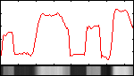
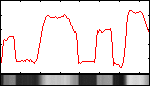
If the fluctuations were more regular in spacing and amplitude, you would get
something more like a wave pattern, such as...
convert -size 20x150 gradient: -rotate 90 \
-function sinusoid 3.5,0,.4 wave.gif
im_profile -s wave.gif wave_profile.gif
|
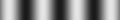
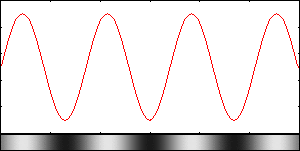
However while this regular wave pattern is vaguely similar to the image profile
shown above, it is too regular.
However if you were to add more waves together you can make a pattern that is
even closer to the one from the image.
convert -size 1x150 gradient: -rotate 90 \
-function sinusoid 3.5,0,.25,.25 wave_1.png
convert -size 1x150 gradient: -rotate 90 \
-function sinusoid 1.5,-90,.13,.15 wave_2.png
convert -size 1x150 gradient: -rotate 90 \
-function sinusoid 0.6,-90,.07,.1 wave_3.png
convert wave_1.png wave_2.png wave_3.png \
-background black -compose plus -flatten added_waves.png
|
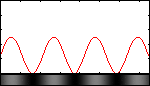
 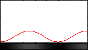
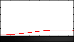
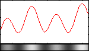
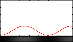
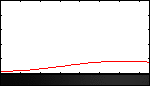
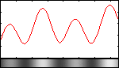
See also
Adding Biased Gradients for a alternative example to the above.
This '
wave superposition' (addition of waves) is much closer, but still
does not exactly match the image pattern. However, you can continue in this
manner, adding more waves and adjusting them, so the resulting composite wave
gets closer and closer to the actual profile of the original image. Eventually
by adding enough waves you can exactly reproduce the original profile of the
image.
This was the discovery made by the mathematician
Joseph Fourier. A
modern interpretation of which states that "any well-behaved function can be
represented by a superposition of sinusoidal waves".
In other words by adding together a sufficient number of sine waves of just
the right frequency and amplitude, you can reproduce any fluctuating pattern.
Therefore, the 'frequency domain' representation is just another way to
store and reproduce the 'spatial domain' image.
The '
Fourier Transform' is then the process of working out what 'waves'
comprise an image, just as was done in the above example.
Sinusoidal Waves
The following is an image of 1D sinusoidal curve. It is a stationary wave in
space, since it is not moving. that is to say it not a function of time.
convert -size 20x150 gradient: -rotate 90 -evaluate sine 5 sine5_wave.gif
im_profile -s sine5_wave.gif sine5_wave_profile.gif
|
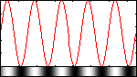
The equation describing a stationary, spatial sinusoidal wave may be expressed
as follows.
Here u is the intensity of the wave as a function of its position x. The
amplitude, A, is half the height from peak to trough. The number of full
up and down cycles is given by n, which is also called the harmonic index
and N is the interval of the wave, namely, the width of the image. Thus,
the frequency, f=n/N, is how rapidly it moves up and down. The distance
from peak to peak, λ, is the wavelength. Also φ is the phase
of the wave. If φ is set to zero, then we have a sine wave and if φ
is set to π/2, then we have a cosine wave. The image and profile above
correspond to a sine wave with 5 full up and down cycles. The following is
the equivalent cosine wave with 5 cycles.
convert -size 20x150 gradient: -rotate 90 -evaluate cosine 5 cosine5_wave.gif
im_profile -s cosine5_wave.gif cosine5_wave_profile.gif
|
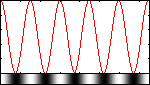
Notice the shift of the wave profile to the left by one quarter of the
wavelength due to the phase difference of π/2. (A phase shift of
2*π or 360 degrees brings us right back to the original sine wave.)
So what are the limits on the frequency that one can produce in an image?
Well, obviously an image channel that is a constant graylevel has zero
frequency. This is called the DC frequency, which is a term that arises
from electronics and means "direct current", since it only flows in one
direction and does not oscillate back and forth. If one only considers
full cycles, then the next frequency corresponds to 1 full cycle or n=1
and the frequency is f=1/N. This is called the fundamental frequency or
first harmonic wave.
convert -size 20x150 gradient: -rotate 90 -evaluate sine 1 sine1_wave.gif
im_profile -s sine1_wave.gif sine1_wave_profile.gif
|
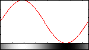
The next higher frequency will have n=2 and f=2/N and is called the second
harmonic wave.
convert -size 20x150 gradient: -rotate 90 -evaluate sine 2 sine2_wave.gif
im_profile -s sine2_wave.gif sine2_wave_profile.gif
|
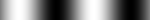
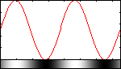
This continues until we reach the maximum number of full cycles that is
allowed, which is n=N/2; that is there is a full cycle every 2 pixels.
Therefore, the frequency is f=1/2. This frequency is called the Nyquist
frequency.
convert -size 20x1500 gradient: -rotate 90 -evaluate sine 75 \
-scale 10% -contrast-stretch 0 sine75_wave.gif
im_profile -s sine75_wave.gif sine75_wave_profile.gif
|
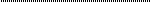
![[IM Output]](fourier_transforms/images/sine75_wave_profile.gif)
The extra large image and subsequent processing used in the above are only
included to avoid aliasing artifacts that occur near or above the Nyquist
frequency. If we do not avoid the aliasing, we then get the following,
which is artificially tapered due to the aliasing.
convert -size 20x150 gradient: -rotate 90 -evaluate sine 75 sine75_aliased_wave.gif
im_profile -s sine75_aliased_wave.gif sine75_aliased_wave_profile.gif
|
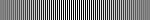
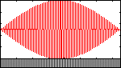
It is stated without proof that any image pattern can be recreated by an
appropriate combination of each sinusoidal wave between zero and the Nyquist
frequency. An interesting demonstration is shown below and creates a step
function pattern by combining (superposing) multiple sinusoidal harmonics.
See
Square Wave.
The ripples or ringing effect, known as the Gibbs phenomenon, is due to the
finite bandwidth of the sinusoidal waves. That is, only a finite number
of harmonics were used.
Complex Number Sinusoidal Waves
The Fourier Transform is founded upon the concept of complex number
sinusoidal waves. What this means is that the wave is made up of two
sinusoidal components, one considered 'real' and the other considered
'imaginary', mathematically speaking.
So what is a complex number? A complex number is expressed as c = a + ib,
where a is the real part, b is the imaginary part and i is a symbol that
represents sqrt(-1). A complex number may be represented as vector diagrams as
shown below. See
Complex Numbers.
In polar form, we have r, which is called the magnitude and is equal to
sqrt(a^2 + b^2) or sqrt(RealPart^2 + ImaginaryPart^2) and φ, which is
called the phase and is equal to arctan2(b,a) or arctan2(ImaginaryPart,RealPart).
So getting back, a complex sinusoidal wave is expressed using
Euler's Formula as:
So it is just a combination of a cosine wave for the real component and a sine
wave for the imaginary component, which is equivalent to a complex exponential,
where e=2.71828 is the basis of the natural logarithm.
Discrete Fourier Transform Equation
So now we put all the above together and present the equations for the
1D Discrete Fourier Transform. Let the 1D image channel grayscale intensities
be called g(x) and the Fourier Transform be called G(n). Then the forward
discrete Fourier transform (DFT) is given by
where n=0,1,2...N-1. This says that the 1D Discrete Fourier Transform is a
1D array of N values, G(n), each of which is composed of an addition
(superposition) of N complex sinusoidal waves whose amplitudes are the 1D
image intensity values, g(x).
The inverse 1D Discrete Fourier Transform is given by a similar equation,
namely,
where x=0,1,2...N-1. This says that each of the N image values at g(x) are
just an addition (superposition) of all N possible frequencies (or harmonics),
given by f=n/N, of complex sinusoidal waves whose amplitudes are the G(n)
values.
We note that these two equations are very similar structurally to each other.
There are two main differences. First, in the forward transform, the exponential
term has a negative sign and in the inverse transform, it has a positive sign.
Second, the forward transform is divided by N. This is just one convention of
several. In some approaches, neither expression is divided by N. This is the
unnormalized representation. In other representations, one or the other of the
forward or inverse equations are divided by N. And in other representation,
the normalization is symmetric with both equations divided by the square root
of N. The reason for the factor of N is to preserve the mean squared magnitude
(average signal) so that it is the same in both the spatial and frequency
domains. Mathematical details can be found at
Scaling.
For those interested, the following set of 5 links goes through the process
of calculating a DFT for a 4-point image of a simple step function.
For a 2D image, these equations become
|
Thus the result of applying the 2D Discrete Fourier Transform on an image
channel of size NxM will be a complex image of size NxM, i.e. coordinates
ranging horizontally from n=0,1,2...N and vertically from m=0,1,2...M. The
intensity values at these coordinates are called the Fourier Coefficients,
G(n,m). They represent the strengths of each corresponding image frequency,
fx=n/N and fy=m/M. However, as the transform is assumed to be periodic, the
zero frequency location, called the DC point, is usually repositioned at
coordinates (N/2,M/2) and thus we get negative frequencies on the left and top
side of this point in the transform image. One reason for doing the shift is
so that the most important (strongest) Fourier Coefficients will be in the
middle and therefore easily visible.
|
FFT/IFT In ImageMagick
Imagemagick's implementation of FFT is based upon the open source FFTW code.
Therefore, before one can do FFT operations, one must install the
FFTW delegate library and
then reinstall Imagemagick from source.
Note that there are several variations on normalization of the FFT and IFT.
- FFT Normalization: multiply the forward transform by 1/(N*M) and 1 for the inverse transform
- IFT Normalization: multiply the inverse transform by 1/(N*M) and 1 for the forward transform
- Equal Normalization: multiply both by 1/sqrt(N*M)
- No Normalization (un-normalized): multiply both by 1
The most common and original normalization is 2), for which the DC point
(center and largest value of) the magnitude image is the sum of all the values
in the input image. It also permits zero padding with no consequences. The next
is 1), for which the DC point of the magnitude is the average value of the
input image. The disadvantage is that zero padding must be compensated by
un-normalization by multiplying by a factor of N*M. ImageMagick has chosen to
use version 1) primarily because it permits the FFT magnitude to be
save in non-HDRI mode without overflowing and clamping. However, there is now a
-define fourier:normalize=inverse, so that one may switch IM to use the more
common normalization. This becomes important when doing normalized cross
correlation to avoid extra normalization compensation factors. The advantage of
3) and 4) is that they are symmetric. The disadvantage of 4) is that a round
trip FFT followed by the IFT would increase the brightness of the result by a
factor of N*M. The raw FFTW code produces an un-normalized FFT and IFT per
version 4). Therefore, FFT normalization is added in the Imagemagick code.
In ImageMagick's initial implementation, as of version 6.5.4-3, any non-square
image or one with an odd dimension will be padded automatically to be square at
the maximum of the image width (N) or height (M) and to have even dimensions
prior to applying the Forward Fourier Transform. The consequence of this is that
after applying the Inverse Fourier Transform, such an image will need to be
cropped back to its original dimensions.
NOTE: As of IM 6.6.0-9, Windows users can now use Fourier Transform functions
in ImageMagick. An update was found and corrected thanks to user el_supremo to
substitute for a missing complex.h library on Windows. See the following
compile notes for help.
As the Fourier Transform is composed of complex numbers, the result of the
transform cannot be visualized directly. Therefore, the complex transform is
separated into two component images in one of two forms.
More commonly, the two components that are created are the magnitude and phase
representations of the complex numbers. The advantage of this is that both
contain only non-negative values. The magnitude, by definition, is always
non-negative. However, the phase normally ranges from -π to +π.
However, it is usual to shift it while doing the forward transform to the
range 0 to 2π and then shift it back when doing the inverse transform. As
the phase has a known range, it is also scaled to span the fully dynamic range
0 to quantumrange. The magnitude has no fixed range of values. However, one
important feature is that the value at the DC or zero frequency position will
be the average graylevel value of that image channel. Typically this is the
largest value in the magnitude component. Usually all the other values in the
magnitude image will be smaller. Consequently, the magnitude image generally
will be dark or even totally black to the naked eye. Scaling the magnitude and
applying a log transform of its intensity values usually will be needed to
bring out any visual detail. The resulting log transformed image is called the
'spectrum'. But, note that the magnitude and not the spectrum should be used
for the inverse transform. The magnitude and phase components are generated in
ImageMagick using the
-fft
option. To transform back from magnitude and phase components, use the
-ift
option. One other note of caution is to use image formats for the
output of the forward transform that do not restrict colors and do not
compress the image. Thus it is recommended that one use either MIFF, TIF, PFM,
EXR or PNG.
For those image formats, such as MIFF, TIF, PFM, MNG and EXR, that support
multiple frames, the output will be a two-frame image. For image formats such as
PNG that do not allow multiple frames, two images will be produced. If one wants
to force two images as outputs for multi-frame formats, one can include the
+adjoin option in the command line.
When using magnitude and phase components, that is
-fft
and
-ift,
ImageMagick may be hdri-enabled for higher precision, but that is not a
requirement. However, Q8 non-hdri does not carry enough precision. Therefore,
one will need to use quantum level compilations of ImageMagick of Q16 or
Q32 non-hdri or any quantum level including Q8 with hdri enabled. The
following examples using
-fft
and
-ift
to utilize magnitude and phase components were all done using the default,
non-hdri, Q16 implementation.
Alternately, the two components that can be created are the real and imaginary
representations of complex numbers. However, as these can contain negative
values, ImageMagick must be compiled with hdri enabled. This permits image
formats such as MIFF, TIF and PFM to preserve the negative and fractional
values without clipping or truncating them to integers. The real and imaginary
components are generated in ImageMagick using the
+fft option. To transform back from real
and imaginary components, use the
+ift option.
Any examples done with real and imaginary components, that is with
+fft
and
+ift,
were all done using the hdri-enabled, Q16 implementation. This includes all of
the advanced examples further down that demonstrate motion blurring, lens
defocus and their corresponding deblurring, cepstrum and normalized cross
correlation were all done using Q16 hdri compilation of IM with real and
imaginary components generated from
+fft and
+ift.
For more information about using HDRI-enabled ImageMagick, see --enable-hdri
in
Advanced Unix Installation and
High Dynamic Range
Now, lets simply try a Fourier Transform round trip on the Lena image. That
is, we simply do the forward transform and immediately apply the inverse
transform to get back the original image. Then we will compare the results to
see the level of quality produced. This example is done using magnitude
and phase components with a normal Q16 ImageMagic compilation.
convert lena.png -fft -ift lena_mp_roundtrip.png
compare -metric rmse lena.png lena_mp_roundtrip.png null:
107.986 (0.00164776)
|
![[IM Output]](fourier_transforms/images/lena.png)
Thus, we see that there is about 0.16% root mean squared error, which is about
typical of the process.
Now lets do the same with real and imaginary components using an hdri-enabled
Q16 ImageMagick compilation.
convert lena.png +fft +ift lena_ri_roundtrip.png
compare -metric rmse lena.png lena_ri_roundtrip.png null:
78.7053 (0.00120097)
|
In this case, there is about 0.12% root mean squared error, which is due to
the higher precision that can be achieve under hdri.
Now, lets do the forward and inverse transforms as separate steps to compute
the magnitude and phase and then the spectrum from the magnitude, so that one
can visualize the results. First, lets get the magnitude and phase images as
lena_mp_fft-0.png and lena_mp_fft-1.png.
convert lena.png -fft lena_mp_fft.png
|
![[IM Output]](fourier_transforms/images/lena_mp_fft-0.png) 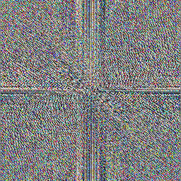
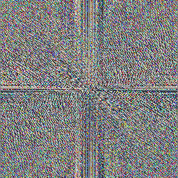
We see that the magnitude image, as mentioned earlier, appears totally black.
So now, lets enhance the magnitude with a log transform to produce the
'spectrum' image. We first use
-contrast-stretch 0 to stretch the channels to full dynamic range. Then
we apply a log transformation using the log argument to the
-evaluate option to enhance the darker values in comparison to the
brighter values. A log of 10,000 is used to bring out the detail.
convert lena_mp_fft-0.png -contrast-stretch 0 -evaluate log 10000 lena_spectrum.png
|
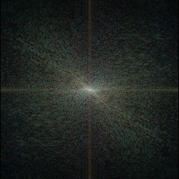
Now we can see the detail in the spectrum version of the magnitude image.
Finally, we inverse transform the original magnitude and phase images to get
back the original Lena image.
convert lena_mp_fft-0.png lena_mp_fft-1.png -ift lena_mp_roundtrip.png
|
It is important to remember, however, that you can not use the spectrum image
for the inverse
"
-ift" transform, since that
will produce overly bright image.
convert lena_spectrum.png lena_mp_fft-1.png -ift lena_mp_roundtrip_fail.png
|
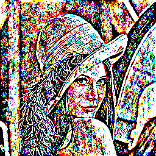
Basically, as you have enhanced the 'magnitude' image, you have also enhanced
the resulting image in the same way, which produces the badly 'clipped' result
shown above.
Properties Of The Fourier Transform
The following is a list of some of the important properties of the Fourier
Transform.
- High frequencies in the FFT (corresponding to rapidly varying intensities
in the original image) lie near the outer parts of the spectrum.
- Low frequencies in the FFT (corresponding to slowly varying intensities in
the original image) lie near the center of the spectrum.
- The zero frequency (DC) point in the FFT for an NxM original image lies at
coordinates N/2,M/2.
- The intensity value in the magnitude image at the DC point is equal the
average graylevel in the original image. (This is a consequence of the
scaling of the forward transform by 1/N).
- Edges in an image give rise to transform components lying along lines
perpendicular to the edges.
- Smaller objects have more spread-out transforms; Larger objects have more
compressed transform.
- If one rotates the image, the transform rotates the same amount.
- The transform of a uniform object lies along a line perpendicular to the
dimension of the object.
- The transform of a set of grid lines of spacing x=a,y=b in image size NxM
is an array of dots: The spacing of the dots in the spectrum will be
Dx=N/a and Dy=M/b.
- The transform of a constant rectangle of dimension x=a,y=b in an image of
size NxM is a sinc function: sinc(x*a/N)*sinc(y*b/M), where the
sinc(x)=sin(π*x)/(π*x). Here is an example of what a sinc function
looks like with a=8 and b=16 and profiles of its center row and column.
The scaling factors of plus 0.21 and divide by 1.21 are because the sinc
function ranges from -0.21 to 1 and thus has negative values that would
otherwise be clipped in the image. Profiles of the log enhanced sinc are
also displayed to show how it amplifies the smaller signals relative to
the larger ones. (The 3D graphs shown below were not created with
ImageMagick, but from an ImageJ plugin.) An important feature of the sinc
function is that the spacing between its zeroes is a constant given by
Dx=N/(a/2) and Dy=M/(b/2).
N=128
a=8
b=16
convert \( -size ${N}x1 xc: \
-fx "ax=$a*pi*(i-w/2)/w; ax==0?1:(sin(ax)/ax+0.21)/1.21" -scale 128x128! \) \
\( -size 1x${N} xc: \
-fx "by=$b*pi*(j-h/2)/h; by==0?1:(sin(by)/by+0.21)/1.21" -scale 128x128! \) \
-compose multiply -composite -contrast-stretch 0 -write sinc8x16.png \
-evaluate log 10 sinc8x16_log10.png
im_profile -s sinc8x16.png[128x1+0+64] sinc8x16h_profile.png
convert sinc8x16.png[1x128+64+0] -rotate 90 miff:- | \
im_profile - sinc8x16v_profile.png
im_profile -s sinc8x16_log10.png[128x1+0+64] sinc8x16h_log10_profile.png
convert sinc8x16_log10.png[1x128+64+0] -rotate 90 miff:- | \
im_profile - sinc8x16v_log10_profile.png
|
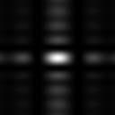
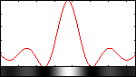
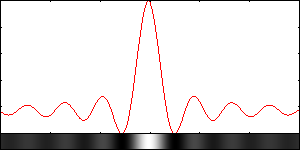
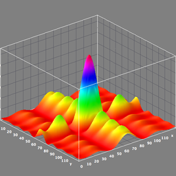
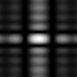
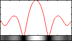
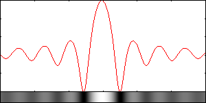
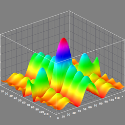
The absolute value of the sinc function is what corresponds to the magnitude of
the transform. Since the sinc function has positive and negative lobes, when
you take the absolute value, you double the number of oscillations. Therefore,
in the spectrum, the spacing of importance is between the middle of successive
dark troughs (which were the locations of the zeros before taking the absolute
value). This spacing then becomes Dx=N/a and Dy=M/b, due to the doubling of the
oscillations. Here is the same example, but with the log of the absolute value.
Profiles of the center row and column are shown as well.
N=128
a=8
b=16
convert \( -size ${N}x1 xc: \
-fx "ax=$a*pi*(i-w/2)/w; ax==0?1:abs(sin(ax)/ax)" -scale 128x128! \) \
\( -size 1x${N} xc: \
-fx "by=$b*pi*(j-h/2)/h; by==0?1:abs(sin(by)/by)" -scale 128x128! \) \
-compose multiply -composite -contrast-stretch 0 \
-evaluate log 100 sinc8x16abs_log100.png
im_profile -s sinc8x16abs_log100.png[128x1+0+64] sinc8x16absh_log100_profile.png
convert sinc8x16abs_log100.png[1x128+64+0] -rotate 90 miff:- | \
im_profile - sinc8x16absv_log100_profile.png
|
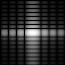
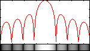
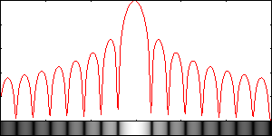
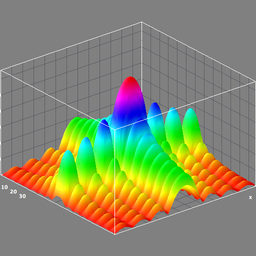
- The transform of a constant circle of diameter d in an image of size NxN
is a jinc
function: jinc(r*d/N), where jinc(r)=J1(πr)/(πr) and J1(r) is
the Bessel function of the first kind of order one. A jinc function would
be similar to a circularly symmetric sinc function, but its side lobes are
much more suppressed than in the sinc function. Also in the jinc function,
the spacing between successive zeroes is not constant as it was in the
sinc function. Therefore we use the spacing from the center to the
first zero, which is Dr=1.22*N/d. The factor of 1.22 is identified in
Theory Of Remote Image Formation and is the first zero in the Bessel
function divided by pi. Here is an example of what a jinc function looks like with d=12
and also a profile of its center row. The scaling factors of plus 0.06613
and divide by 0.56613 are because the jinc function ranges from -0.06613
to 0.5 and thus has negative values that would otherwise be clipped in the
image. Note that the jinc function is very difficult to compute and a
series approximation to the Bessel function is used to evaluate it, which
was obtained from The Handbook Of Mathematical Functions by Abramowitz and Stegun,
formula 9.4.1 and 9.4.3, p369-370. We speed it up by computing it in 1D as
a look up table (lut) image and then apply the lut image to a
radial-gradient using the -clut option.
N=128
N2=`convert xc: -format "%[fx:sqrt(2)*$N]" info:`
d=12
rad=`convert xc: -format "%[fx:$N/2]" info:`
rad2=`convert xc: -format "%[fx:sqrt(2)*$rad]" info:`
fact=`convert xc: -format "%[fx:pi*$d/$N]" info:`
a0=0.5; a1=-.56249985; a2=.21093573; a3=-.03954289; a4=.00443319; a5=-.00031781; a6=.00001109
uu="(xx/3)"
xxa="($a0+$a1*pow($uu,2)+$a2*pow($uu,4)+$a3*pow($uu,6)+$a4*pow($uu,8)+$a5*pow($uu,10)+$a6*pow($uu,12))"
b0=.79788456; b1=.00000156; b2=.01659667; b3=.00017105; b4=-.00249511; b5=.00113653; b6=-.00020033
c0=-2.35619; c1=.12499612; c2=-.00005650; c3=-.00637879; c4=.00074348; c5=.00079824; c6=-.00029166
iuu="(3/xx)"
vv="($b0+$b1*$iuu+$b2*pow($iuu,2)+$b3*pow($iuu,3)+$b4*pow($iuu,4)+$b5*pow($iuu,5)+$b6*pow($iuu,6))"
ww="(xx+$c0+$c1*$iuu+$c2*pow($iuu,2)+$c3*pow($iuu,3)+$c4*pow($iuu,4)+$c5*pow($iuu,5)+$c6*pow($iuu,6))"
xxb="$vv*cos($ww)/(xx*sqrt(xx))"
convert -size 1x${rad2} gradient: -rotate 90 \
-fx "xx=$fact*i; (xx<=3)?($xxa+0.06613)/0.56613:($xxb+0.06613)/0.56613" jinc12_lut.png
convert \( -size ${N2}x${N2} radial-gradient: -negate -gravity center -crop ${N}x${N}+0+0 +repage \) \
jinc12_lut.png -clut -write jinc12.png \
-contrast-stretch 0 -evaluate log 10 jinc12_log10.png
im_profile -s jinc12.png[128x1+0+64] jinc12_profile.png
im_profile -s jinc12_log10.png[128x1+0+64] jinc12_log10_profile.png
|
![[IM Output]](fourier_transforms/images/jinc12.png) 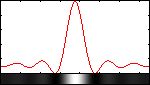
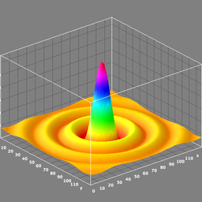
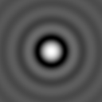
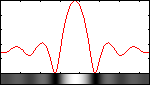
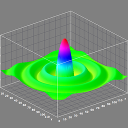
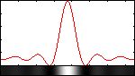
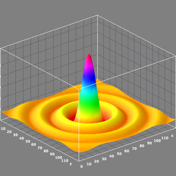
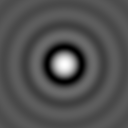
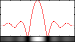
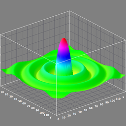
The absolute value of the jinc function is what corresponds to the magnitude
of the transform. Since the jinc function has positive and negative lobes, when
you take the absolute value, you double the number of oscillations. Therefore,
in the spectrum, the spacing, Dr=1.22*N/d, corresponds to that from the
center to the middle of the first dark trough (which used to be the
location of the first zero). Here is the same example, but with the log of
the absolute value. And we also graph the center row.
N=128
N2=`convert xc: -format "%[fx:sqrt(2)*$N]" info:`
d=12
rad=`convert xc: -format "%[fx:$N/2]" info:`
rad2=`convert xc: -format "%[fx:sqrt(2)*$rad]" info:`
fact=`convert xc: -format "%[fx:pi*$d/$N]" info:`
a0=0.5; a1=-.56249985; a2=.21093573; a3=-.03954289;
a4=.00443319; a5=-.00031781; a6=.00001109
uu="(xx/3)"
xxa="($a0+$a1*pow($uu,2)+$a2*pow($uu,4)+$a3*pow($uu,6)
xxa="$xxa+$a4*pow($uu,8)+$a5*pow($uu,10)+$a6*pow($uu,12))"
b0=.79788456; b1=.00000156; b2=.01659667;
b3=.00017105; b4=-.00249511; b5=.00113653; b6=-.00020033
c0=-2.35619; c1=.12499612; c2=-.00005650;
c3=-.00637879; c4=.00074348; c5=.00079824; c6=-.00029166
iuu="(3/xx)"
vv="($b0+$b1*$iuu+$b2*pow($iuu,2)+$b3*pow($iuu,3)"
vv="$vv+$b4*pow($iuu,4)+$b5*pow($iuu,5)+$b6*pow($iuu,6))"
ww="(xx+$c0+$c1*$iuu+$c2*pow($iuu,2)+$c3*pow($iuu,3)"
ww="$ww+$c4*pow($iuu,4)+$c5*pow($iuu,5)+$c6*pow($iuu,6))"
xxb="$vv*cos($ww)/(xx*sqrt(xx))"
convert -size 1x${rad2} gradient: -rotate 90 \
-fx "xx=$fact*i; (xx<=3)?abs($xxa):abs($xxb)" jinc12abs_lut.png
convert \( -size ${N2}x${N2} radial-gradient: -negate \
-gravity center -crop ${N}x${N}+0+0 +repage \) \
jinc12abs_lut.png -clut \
-contrast-stretch 0 -evaluate log 100 \
jinc12abs_log100.png
im_profile -s jinc12abs_log100.png[128x1+0+64] jinc12abs_log100_profile.png
|
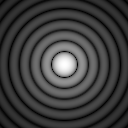
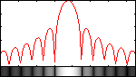
![[IM Output]](fourier_transforms/images/surface_plot_of_jinc12abs_log100_small.png)
- The transform of a Gaussian function of sigma=d in an image size NxN is a
Gaussian function. The sigma of the Gaussian function in the spectrum will
be sigma=N/(2d). See Fourier Transform Gaussian.
- The phase looks uninteresting, but contains more information than the
magnitude with regard to reconstructing the original image as something
visually recognizable.
- Convolution in the spatial domain is equivalent to multiplication
in the frequency domain.
- Other properties and characteristics are defined mathematically at either
http://www.ph.tn.tudelft.nl/Courses/FIP/noframes/fip-Properti-2.html
or http://en.wikipedia.org/wiki/Fourier_transform
|
Spectrum Of A Constant Image
Lets demonstrate some of these properties. First lets simply take a constant
grayscale image and get its magnitude. The result is that magnitude image
has single dot at the zero frequency or DC point in the middle of the image
at coordinates (N/2,M/2) whose value is just the average grayscale value of
the input image. Since the image is pure white, the magnitude at the DC
point will be white and so does not require log scaling to make that visible.
Therefore the magnitude and the spectrum are equivalent in this case.
convert -size 128x128 xc:white \
-write white.png -fft -delete 1 white_magnitude.png
convert white_magnitude.png -format "%[fx:s.p{64,64}]" info:
1
|
![[IM Output]](fourier_transforms/images/white.png)
If we do the same on any other value of gray, then the value at the center
of the magnitude will be less, in this case .5 or gray(50%), and we must
apply the log to the magnitude to make the spectrum so that the center dot
is visible. In this case, of course the -contrast-stretch would have
sufficed by itself.
convert -size 128x128 xc:"gray(50%)" \
-write gray.png -fft -delete 1 -write gray_magnitude.png \
-contrast-stretch 0 -evaluate log 100 gray_spectrum.png
convert gray_magnitude.png -format "%[fx:s.p{64,64}]" info:
0.500008
|
![[IM Output]](fourier_transforms/images/gray.png)
Now let's take a constant color image and get its magnitude.
convert -size 128x128 xc:gold constant.png
convert constant.png -fft +delete constant_magnitude.png
|
![[IM Output]](fourier_transforms/images/constant.png) 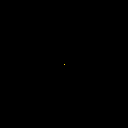
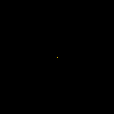
Note that the magnitude image in this case is really pure black, except for
a single colored pixel in the very center of the image at the pixel location
width/2, height/2. This pixel is the zero frequency or DC ('Direct
Current') value of the image, and is the one pixel that does not represent
a sine wave. In other words it is just the FFT constant component!
To see this single pixel more clearly lets also magnify that area of the
image...
convert constant_magnitude.png -gravity center -extent 5x5 \
-scale 2000% constant_dc_zoom.gif
|
![[IM Output]](fourier_transforms/images/constant_dc_zoom.gif)
Note that the color of the DC point is the same as the original image.
Actually, it is a good idea to remember that what you are seeing is three
values. That is the FFT image generated is actually three separate Fast
Fourier transforms, one for each of the three red, green and blue image
channels. The FFT itself has no real knowledge about colors, only the channel
values or 'gray-levels'.
Effects of the DC Color
In a more typical non-constant image, the DC value is the average color of the
image. The color you should generally get if you had completely blurred,
averaged, or resized the image down to a single pixel or color.
For example lets extract the DC pixel from the FFT of the "Lena" image.
convert lena.png -fft +delete lena_magnitude.png
convert lena_magnitude.png -gravity center -extent 1x1 \
-scale 60x60 lena_dc_zoom.gif
|
![[IM Output]](fourier_transforms/images/lena_magnitude.png)
![[IM Output]](fourier_transforms/images/lena_dc_zoom.gif)
As you can see the average color for the image is a sort of 'dark pink' color.
Another way of thinking about this special pixel is that it represents the
center 'bias' level for all the sine waves.
For example lets replace that 'dark pink' DC pixel with some other color
such as the more orange color 'tomato'...
convert -size 60x60 xc:tomato tomato_swatch.gif
convert lena.png -fft \
\( -clone 0 -fill tomato -draw "point 128,128" -alpha off \) \
-delete 0 +swap -ift lena_dc_replace.png
|
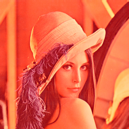
What is really happening is that by changing the DC value in the FFT magnitude,
you are changing the whole image in that same way. This is how changing the
average color of the image gets replicated from the 'frequency domain' back
into the 'spatial domain'.
This is not a recomended method of color tinting an image as there are other
more direct means. But it is an effective approach.
Spectrum Of A Sine Wave Image
Next, lets take a look at the spectrum from a single sine wave image with 4
cycles. We see that it has 3 dots. The center dot is at zero x and y
frequencies, i.e. the DC point, and in the original magnitude has a value equal
to the average over the whole input image channel. The other two dots are at
the positive and negative frequencies of the sine wave. As the sine wave has
n=4 cycles along the x direction only, the position of the two sides dots will
be 4 pixels to the left and right of the center dot.
convert -size 128x129 gradient: -chop 0x1 -rotate 90 -evaluate sine 4 sine4.png
convert sine4.png -fft +delete \
-contrast-stretch 0 -evaluate log 100 sine4_spectrum.png
|
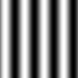
If we repeat this with a sine wave with 16 cycles, then again we see that it
has 3 dots, but the dots are further apart, since the waves are closer together.
In this case the side dots are spaced 16 pixels to the left and right sides of
the center dot.
convert -size 128x129 gradient: -chop 0x1 -rotate 90 -evaluate sine 16 sine16.png
convert sine16.png -fft +delete \
-contrast-stretch 0 -evaluate log 100 sine16_spectrum.png
|
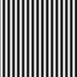
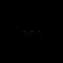
Spectrum Of A Rectangle Pattern Image
Next, lets look at the spectrum of white rectangle of width 8 and height 16
inside a black background.
convert -size 8x16 xc:white -gravity center -background black -extent 128x128 \
-write rect8x16.png -fft -delete 1 \
-contrast-stretch 0 -evaluate log 100 rect8x16_spectrum.png
|
![[IM Output]](fourier_transforms/images/rect8x16.png) 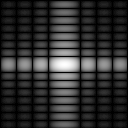
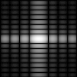
Notice that this looks like the image that we directly obtained from the
absolute value of the sinc function earlier. If we graph the center row and
column, we get
im_profile -s rectangle_spectrum.png[128x1+0+64] rectangle_spec_row_profile.png
convert rect8x16_spectrum.png[1x128+64+0] -rotate 90 miff:- |\
im_profile -s - rect8x16_spec_col_profile.png
|
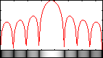
This clearly demonstrates that the transform of the rectangular shape is
indeed a sinc function and that the narrower dimension of the object in the
image produces a transform with features that are more spread out and wider.
According to the properties listed above, the spacing in each dimension
between the troughs is determined by N/a and N/b. Thus, when the width and
height of the rectangle are a=8 and b=16, then the spacings should be 128/8=16
horizontally and 128/16=8 vertically. This is indeed what one measures for the
spacing between the dark troughs in this image.
Now, lets rotate the rectangle by 45 degrees. We find that the spectrum is
also rotated in the same direction by 45 degrees.
convert rect8x16.png -rotate 45 -gravity center -crop 128x128+0+0 +repage \
-write rect8x16_rot45.png -fft -delete 1 \
-contrast-stretch 0 -evaluate log 100 rect8x16_rot45_spectrum.png
|
Spectrum Of A Flat Circular Pattern Image
Next, lets look at the spectrum from an image with a white, flat circular
pattern, in one case with diameters of 12 (radius 6) and in another case
with diameter of 24 (radius 12).
convert -size 128x128 xc:black -fill white \
-draw "circle 64,64 64,70" -alpha off -write circle6.png -fft -delete 1 \
-contrast-stretch 0 -evaluate log 100 circle6_spectrum.png
convert -size 128x128 xc:black -fill white \
-draw "circle 64,64 64,76" -alpha off -write circle12.png -fft -delete 1 \
-contrast-stretch 0 -evaluate log 100 circle12_spectrum.png
|
![[IM Output]](fourier_transforms/images/circle6.png)
Note that the first image is very close to what we generated for the jinc
example further above. It is however a little broken up. This artifacting
occurs due to the small size of the circle. Since it is represented
digitally, its perimeter is not perfectly circular. The transform of the
larger circle is better as its perimeter is a closer approximation of a true
circle. We therefore conclude that indeed the transform of the flat circular
shape is a jinc function and that the image containing the smaller diameter
circle produces transform features that are more spread out and wider.
According to the properties listed above, the distance from the center to
the middle of the first dark ring in the spectrum will be 1.22*N/d. When the
diameter of the circle is d=12, we get a distance of 1.22*128/12=13.
Likewise when the diameter of the circle is d=24, we get a distance of
1.22*128/24=6.5. These are the values that one measures in those images.
Spectrum Of A Gaussian Pattern Image
Next, lets look at the spectrum from two images, each with a white Gaussian
circular pattern having sigmas of 8 and 16, respectively
convert -size 128x128 xc:black -fill white \
-draw "point 64,64" -gaussian-blur 0x8 -contrast-stretch 0 \
-alpha off -write gaussian8.png -fft -delete 1 \
-contrast-stretch 0 -evaluate log 100 gaussian8_spectrum.png
im_profile -s gaussian8.png[128x1+0+64] gaussian8_profile.png
im_profile -s gaussian8_spectrum.png[128x1+0+64] gaussian8_spectrum_profile.png
|
![[IM Output]](fourier_transforms/images/gaussian8.png)
convert -size 128x128 xc:black -fill white \
-draw "point 64,64" -gaussian-blur 0x16 -contrast-stretch 0 \
-alpha off -write gaussian16.png -fft -delete 1 \
-contrast-stretch 0 -evaluate log 100 gaussian16_spectrum.png
im_profile -s gaussian16.png[128x1+0+64] gaussian16_profile.png
im_profile -s gaussian16_spectrum.png[128x1+0+64] gaussian16_spectrum_profile.png
|
![[IM Output]](fourier_transforms/images/gaussian16.png)
This shows that the transform of the Gaussian circular shape is another
Gaussian and that the larger the sigma in the original image, the smaller the
sigma will be in the spectrum. From the properties stated above, we know that
the sigma in the spectrum will be just N/(2*sigma), where sigma is from the
original image. So for an image of size N and sigma=8, the sigma in the
spectrum will be 128/16=8. Similarly if the image's sigma is 16, then the
sigma in the spectrum will be 128/32=4.
Spectrum Of A Grid Pattern Image
Next, lets transform an image containing just a set of grid lines spaced 16x8
pixels apart. The resulting spectrum is just an array of dots where the grid
lines that are more closely spaced produce dots further apart and vice versa.
According to the properties above, since the grid lines are spaced 16x8 pixels
apart, then the dots should be spaced N/a=128/16=8 and M/b=128/8=16, which is
just what is measured in this image.
convert -size 16x8 xc:white -fill black \
-draw "line 0,0 15,0" -draw "line 0,0 0,7" \
-alpha off -write mpr:tile +delete \
-size 128x128 tile:mpr:tile \
-write grid16x8.png -fft -delete 1 \
-contrast-stretch 0 -evaluate log 100000 grid16x8_spectrum.png
|
Image Reconstructed From Magnitude Or Phase Only
Both the magnitude and the phase are important in the Fourier Transform.
However, is one more important than the other? First let's look at the
statistics of the two components.
convert lena.png -fft -format "channel=%s; min=%[min]; max=%[max]" info:
channel=0; min=0; max=46319.2
channel=1; min=0.01993; max=65535
|
As expected, we see that both components are always non-negative. The magnitude
(first channel) is by definition non-negative. The phase (second channel) has
been scaled intentionally from a range between -pi and pi to full dynamic range
between 0 and quantumrange, which is 65535 for Q16. Thus both components look
equally important.
To get further insight, lets try reconstructing an image from either just
its magnitude component or just its phase component.
convert lena.png -fft lena_mp_fft.png
convert lena_mp_fft-0.png \( -size 256x256 xc:gray \) -ift lena_mag_ift.png
convert \( -size 256x256 xc:gray \) lena_mp_fft-1.png -ift lena_phase_ift.png
|
What we find is that the reconstruction from the phase contains the edge
features in the original image, whereas the magnitude image contains most of
the coloring from the original image. You can recognize the girl in the
phase reconstructed image, but you cannot see anything resembling her in the
magnitude reconstructed image.
Image Reconstructed From Real Or Imaginary Only
Finally, lets see about the relative importance of the real and imaginary
components. Again we use hdri-enabled Q16 ImageMagick compilation as both
the real and imaginary components contain positive and negative values.
First lets look at the statistics of the two components.
convert lena.png +fft -format "channel=%s; min=%[min]; max=%[max]; mean=%[mean]" info:
channel=0; min=-2521.81; max=46319.2; mean=0.63663
channel=1; min=-2770.91; max=2770.91; mean=0.000439742
|
As we expected, both channels contain both positive and negative values. But
The real component has a relatively small negative minimum and a relatively
large positive maximum. On the other hand, the imaginary component has both a
relatively small negative minimum and a relatively small positive maximum. Both
are about equal in absolue value and its mean is about zero. This suggests
that the imaginary component is perhaps less important than the real component.
So, lets try reconstructing an image from either just its real component or
just its imaginary component.
convert lena.png +fft +adjoin lena_ri_fft.tif
convert lena_ri_fft-0.tif \( -size 256x256 xc:black \) +ift lena_real_ift.png
convert \( -size 256x256 xc:white \) lena_ri_fft-1.tif +ift lena_imag_ift.png
|
Note that the real and imaginary results of the +fft are saved in TIFF format,
since that supports 32-bit values. However, most browsers (Safari being the
apparent exception) will not display them. So they have been converted to PNG
format for display. Consequency, those images cannot be used for further
processing as PNG does not support 32-bits per channel. The proper TIFF files
are needed.
So it would appear that in this case, neither does a good job. Since both
components have relatively similar strengths for min and max, they both are
important. But as the imaginary component has a much smaller max value, its
reconstruction is poorer. For example, the ratio of max values for imaginary vs
real is about (2770.91/46319.2)=0.6 or 60%.
However, might it be possible under the right circumstances that only the real
component might be sufficient. The answer is yes. In particular when using
and image that is mostly black with just a little white in it. This is the case
of the blurring filters as exampled by the simple white rectangle or white
circle shown earlier. So lets repeat this for one of these cases, say the
circle of diameter 12.
convert circle6.png +fft -format "channel=%s; min=%[min]; max=%[max]; mean=%[mean]" info:
channel=0; min=-499.375; max=505.504; mean=0.000602056
channel=1; min=-0.271139; max=0.271139; mean=-9.94399e-07
convert circle6.png +fft +adjoin circle6_ri_fft.tif
convert circle6_ri_fft-0.tif \( -size 128x128 xc:black \) +ift circle6_real_ift.png
compare -metric rmse circle6.png circle6_real_ift.png null:
63.2857 (0.000965678)
convert \( -size 128x128 xc:white \) circle6_ri_fft-1.tif +ift circle6_imag_ift.png
|
Here the ratio of max values for imaginary vs real is about
(0.271139/505.504)=0.0005 or about 0.05%. So in the case of the circle,
the real component alone virtually reproduces the original. This will be
important later as it shows that for such simple filter images, in practice,
the imaginary component (or phase component) of the filter can often be
ignored.
Practical Applications
OK, now that we have covered the basics, what are the practical applications
of using the Fourier Transform?
Some of the things that can be done include: 1) increasing or decreasing the
contrast of an image, 2) blurring, 3) sharpening, 4) edge detection and
5) noise removal.
Changing The Contrast Of An Image - Coefficient Rooting
One can adjust the contrast in an image by performing the forward Fourier
transform, raising the magnitude image to a power and then using that with the
phase in the inverse Fourier transform. To increase, the contrast, one uses an
exponent slightly less than one and to decrease the contrast, one uses an
exponent slightly greater than one. So lets first increase the contrast on the
Lena image using an exponent of 0.9 and then decrease the contrast using an
exponent of 1.1.
convert lena.png -fft \
\( -clone 0 -evaluate pow 0.9 \) -delete 0 \
+swap -ift lena_plus_contrast.png
convert lena.png -fft \
\( -clone 0 -evaluate pow 1.1 \) -delete 0 \
+swap -ift lena_minus_contrast.png
|
![[IM Output]](fourier_transforms/images/lena_plus_contrast.png)
Blurring An Image - Low Pass Filtering
One of the most important properties of Fourier Transforms is that convolution
in the spatial domain is equivalent to simple multiplication in the frequency
domain. In the spatial domain, one uses small, square-sized, simple
convolution filters (kernels) to blur an image with the -convolve option. This is called a low pass filter. The
simplest filter is just a an equally-weighted, square array. That is all the
values are ones, which are normalized by dividing by their sum before applying
the convolution. This is equivalent to a local or neighborhood average.
Another low pass filter is the Gaussian-weighted, circularly shaped filter
provided by either -gaussian-blur or -blur.
In the frequency domain, one type of low pass blurring filter is just a
constant intensity white circle surrounded by black. This filter corresponds
to the magntitude (or real) component and there is no (or a zero) phase (or
imaginary) component as we discussed above. This filter would be similar to
a circularly shaped averaging convolution filter in the spatial domain.
However, since convolution in the spatial domain is equivalent to
multiplication in the frequency domain, all we need do is perform a forward
Fourier transform of the image, then multiply the filter with the magnitude
image and finally perform the inverse Fourier transform of the product. We
note that a small sized convolution filter will correspond to a large circle
in the frequency domain. Multiplication is carried out via -composite with a -compose multiply setting.
So let's try doing this with two sizes of circular filters, one of diameter 48
(radius 24) and the other of diameter 32 (radius 16). Note that we display the
spectrum and masked spectrum, but we actually use the masked magnitude to
create the blurred result.
convert lena.png -fft \
\( -size 256x256 xc:black -fill white -draw "circle 128,128 152,128" -alpha off -write circle24.png \
-clone 0 -compose multiply -composite \) \
\( +clone -contrast-stretch 0 -evaluate log 10000 -write lena_circle24_spec.png \) \
-delete 0,3 +swap -ift lena_circle24_blur.png
convert lena.png -fft \
\( -size 256x256 xc:black -fill white -draw "circle 128,128 144,128" -alpha off -write circle16.png \
-clone 0 -compose multiply -composite \) \
\( +clone -contrast-stretch 0 -evaluate log 10000 -write lena_circle16_spec.png \) \
-delete 0,3 +swap -ift lena_circle16_blur.png
|

![[IM Output]](fourier_transforms/images/circle24.png)
A bash script, fftfilter, is available to make this easier. The simplified
equivalent without all the extra processing to the above is given by:
convert size 256x256 xc:black -fill white -draw "circle 128,128 152,128" \
-alpha off circle24.png
fftfilter lena.png circle24.png lena_circle24_blur.png
convert -size 256x256 xc:black -fill white -draw "circle 128,128 144,128" \
-alpha off circle16.png \
fftfilter lena.png circle16.png lena_circle16_blur.png
|
So we see that the image that used the smaller diameter filter produced more
blurring. We also note the 'ringing' or 'ripple' effect near edges in the
resulting images. This occurs because the Fourier Transform of a circle, as we
saw earlier, is a jinc function, which has decreasing oscillations as it
progresses outward from the center. Here however, the jinc function and the
oscillations are in the spatial domain rather than in the frequency domain, as
we had demonstrated earlier above.
So what can we do about this? The simplest thing is to taper the edges of the
circles using various windowing functions. Alternately, one can use a filter
such as a Gaussian shape that is already by definition tapered. So lets do
the latter and use two Gaussian, circularly symmetric filters with sigma of
24 and 16, respectively. Here again we display the spectrum and masked
spectrum, but we actually use the masked magnitude to create the blurred result.
convert lena.png -fft \
\( -size 256x256 xc:black -fill white -draw "point 128,128" \
-alpha off -blur 0x24 -contrast-stretch 0 -write gaussian24.png \
-clone 0 -compose multiply -composite \) \
\( +clone -contrast-stretch 0 -evaluate log 10000 -write lena_gaussian24_spec.png \) \
-delete 0,3 +swap -ift lena_gaussian24_blur.png
convert lena.png -fft \
\( -size 256x256 xc:black -fill white -draw "point 128,128" \
-alpha off -blur 0x16 -contrast-stretch 0 -write gaussian16.png \
-clone 0 -compose multiply -composite \) \
\( +clone -contrast-stretch 0 -evaluate log 10000 -write lena_gaussian16_spec.png \) \
-delete 0,3 +swap -ift lena_gaussian16_blur.png
|
Using the bash script, fftfilter, the simplified equivalent without all the extra
processing to the above is given by:
convert -size 256x256 xc:black -fill white -draw "point 128,128" \
-alpha off -blur 0x24 -contrast-stretch 0 gaussian24.png
fftfilter lena.png gaussian24.png lena_gaussian24_blur.png
convert -size 256x256 xc:black -fill white -draw "point 128,128" \
-alpha off -blur 0x16 -contrast-stretch 0 gaussian16.png
fftfilter lena.png gaussian16.png lena_gaussian16_blur.png
|
These results with the Gaussian filter are of course much better.
The bad thing about filtering in the frequency domain is that to produce a
small amount of (blurring) filtering, you need a large filter, which may take
longer to create. The good thing about filtering in the frequency domain is
that to produce a large amount of (blurring) filtering, you only need a small
filter. Therefore, the delay you pay for doing the forward and inverse
Fourier transforms, can often be made up by the shorter time it takes to
create and apply the filter. However, when the filter gets very small, in
this case a circle, it may degrade into some other shape not intended, due to
pixelization from having a digital image. However, antialiasing the boundary
of the filter shape should help.
Detecting Edges In An Image - High Pass Filtering
In the spatial domain, high pass filters that extract edges from an image are
often implemented as convolutions with positive and negative weights such that
they sum to zero. Things are much simpler in the frequency domain. Here a high
pass filter is just the negated version of the low pass filter. That is where
the low pass filter is bright, the high pass filter is dark and vice versa. So
in ImageMagick, all we need do is apply the
-negate option to the low pass filter image. So lets apply
high pass filters to the Lena image that correspond to the constant intensity
and gaussian roll-off circularly symmetric filters of diameter=24 and sigma=24,
respectively. Here again we display the spectrum and masked spectrum, but we
actually use the masked magnitude to create the edge result.
convert lena.png -fft \
\( -size 256x256 xc:black -fill white -draw "circle 128,128 152,128" -negate -alpha off -write circle24n.png \
-clone 0 -compose multiply -composite \) \
\( -clone 0 -contrast-stretch 0 -evaluate log 100000 circle24n.png \
-compose multiply -composite -write lena_circle24n_spec.png \) \
-delete 0,3 +swap -ift -normalize lena_circle24n_edge.png
convert lena.png -fft \
\( -size 256x256 xc:black -fill white -draw "point 128,128" \
-alpha off -blur 0x24 -contrast-stretch 0 -negate -write gaussian24n.png \
-clone 0 -compose multiply -composite \) \
\( -clone 0 -contrast-stretch 0 -evaluate log 100000 gaussian24n.png \
-compose multiply -composite -write lena_gaussian24n_spec.png \) \
-delete 0,3 +swap -ift -normalize lena_gaussian24n_edge.png
|
Using the bash script, fftfilter, the simplified equivalent without all the extra
processing to the above is given by:
convert -size 256x256 xc:black -fill white -draw "circle 128,128 152,128" \
-negate -alpha off -write circle24n.png
fftfilter lena.png circle24n.png lena_circle24n_edge.png
convert -size 256x256 xc:black -fill white -draw "point 128,128" \
-alpha off -blur 0x24 -contrast-stretch 0 -negate gaussian24n.png
fftfilter lena.png gaussian24n.png lena_gaussian24n_edge.png
|
Carefully examining these two results, we see that the simple circle is not
quite as good as the gaussian, as it has 'ringing' artifacts and is not quite
as sharp.
Sharpening An Image - High Boost Filtering
The simplest way to sharpen an image is to high pass filter it (without
the normalization stretch) and then blend it with the original image. The
high pass filtering, in this case, is done in the frequency domain and the
result transformed back to the spatial domain where it is blended with the
original image.
convert lena.png -fft \
\( -clone 0 \( -size 256x256 xc:black -fill white \
-draw "point 128,128" -blur 0x24 -contrast-stretch 0 -negate \) \
-alpha off -compose multiply -composite \) \
-delete 0 +swap -ift \
lena.png -compose blend -set "option:compose:args" 100x100 -composite \
lena_gauss24_sharp.png
|
Noise Removal - Notch Filtering
Many noisy images contain some kind of patterned noise. This kind of noise is
easy to remove in the frequency domain as the patterns show up as either a
pattern of a few dots or lines. Recall a simple sine wave is a repeated
pattern and shows up as only 3 dots in the spectrum.
In order to remove this noise, one simply, but unfortunately, has to manually
mask (or notch) out the dots or lines in the magnitude image. We do this by
transforming to the frequency domain, create a grayscale version of the
spectrum, mask the dots or lines, threshold it, multiply the binary mask image
with the magnitude image and then transform back to the spatial domain.
Lets try this on the clown image, which contains a diagonally striped
dither-like pattern. First we transform the clown image to create its
magnitude and phase images.
convert clown.jpg -fft clown_fft.png
|
![[IM Output]](fourier_transforms/images/clown.jpg)
Next, we create the spectrum image from the magnitude, but we add an extra
step to push any image values at graylevel zero to graylevel 1, so that we
can preserve graylevel zero for the masked areas.
convert clown_fft-0.png -contrast-stretch 0 -evaluate log 100000 \
-fill "gray(1)" -opaque "gray(0)" clown_spectrum.png
|
A bash script, spectrum, is also available to make this easier. One can
use either the magnitude image for input or just provide the original image
and it will convert that to the magnitude before generating the spectrum.
In fact, the script does an adequate job of estimating the log scaling
constant, so in fact, you may leave off the -s argument. Thus, the equivalent
to the above is either of the following:
spectrum -s 100000 clown_fft-0.png clown_spectrum.png
or
spectrum -m -s 100000 clown.jpg clown_spectrum.png
|
We see that the spectrum contains four bright star-like dots, one in each
quadrant. We ignore the bright dot and lines in the middle as they represent
the DC or zero frequency components in the image, i.e. the constant intensity
regions. So now we need to mask out those star-like dots. We could display
this image in ImageMagick and use the display functions to measure the
locations and sizes of the star-like dots; then use
-draw to cover them with black circles or rectangles.
But it is easier to use some other tool such as GIMP or Photoshop to do this
interactively and then threshold the result to a binary image using
ImageMagick. The results are shown below.
convert clown_spectrum_mask.png -threshold 0 clown_mask.png
|
![[IM Output]](fourier_transforms/images/clown_spectrum_mask.png)
![[IM Output]](fourier_transforms/images/clown_mask.png)
You can even draw in color and then extract the mask as follows:
convert clown_spectrum_edited.png -fill white +opaque red \
-fill black -opaque red clown_mask2.png
|
Now we simply multiply the mask with the magnitude and use the result with
the phase image to transform back to the spatial domain. We display the
original image next to it for comparison. Here again we display the spectrum,
but we actually mask the magnitude to create the filtered result.
We note, however, that there is some 'ringing' artifacts remaining in the
result. This can be removed by tapering the sharp white-to-black transitions
in the mask. One can use a Gaussian shaped taper as we did before or even
simply a linear taper of 5 pixels. Note that -blur radiusx65000 will produce
such a linear taper.
Both examples above become simpler using the script,
fftfilter (after creating the mask).
fftfilter clown.jpg clown_mask.png clown_filtered.png
fftfilter clown.jpg clown_mask_taper.png clown_filtered_taper.png
|
We can even take the difference between the original and the result to create
an image that is just the noise that was removed.
convert clown.jpg clown_filtered_taper.png -compose difference \
-composite -normalize clown_noise.png
|
Lets try this on an another example. This time on the twig image,
which contains an irregular horizontal and vertical striped patter. First we
transform the twig image to create its magnitude and phase images. Then, we
create a graylevel spectrum image from the magnitude with graylevel zero
preserved for the masked areas.
convert twig.jpg -fft twig_fft.png
spectrum -c 100000 twig_fft-0.png twig_spectrum.png
|
![[IM Output]](fourier_transforms/images/twig.jpg)
In this case, as the noise in the image is horizontally and vertically
oriented, this shows up as vertical and horizontal bright areas along the
center of the spectrum. So we mask those out, again manually, using GIMP
or Photoshop. Then we threshold the result in ImageMagick to form a binary
mask.
convert twig_spectrum_mask.png -threshold 0 twig_mask.png
|
Now we again multiply the mask with the magnitude and use the result with
the phase image to transform back to the spatial domain. The result is
presented next to the original image for comparison. Here again we display the
spectrum, but we actually mask the magnitude to create the filtered result.
Again just using the script (after creating the mask), fftfilter, we get:
fftfilter twig.jpg twig_mask.png twig_filtered.png
|
Now we can take the difference between the original and the result to create
an image that is just the noise that was removed
convert twig.jpg twig_filtered.png -compose difference \
-composite -normalize twig_noise.png
|
![[IM Output]](fourier_transforms/images/twig_noise.png)
Advanced Applications
Some of the other more advanced applications of using the Fourier Transform
include: 1) deconvolution (deblurring) of motion blurred and defocused images
and 2) normalized cross correlation to find where a small image best matches
within a larger image.
However, as these applications generally require the use of the real and
imaginary components of the Fourier Transform and/or very high precision, we
must do the processing using Q32 or an HDRI compiled version of IM 6.5.4-7 or
later until proper ImageMagick functions can be made for them. When that
occurs, the HDRI restriction can be lifted. The examples below were
processed using a Q16 HDRI compilation of ImageMagick.
Convolution And Deconvolution
In the spatial domain, the process of blurring or edge detection of an image
is usually accomplished with convolutions. That is, the image is convolved
with a small kernel or filter. For example, a 3x3 array of ones, is a small
blurring (averaging) filter. In ImageMagick, this 2D array of ones is simply
supplied as a 1D list of ones to the -convolve option. However, in other systems, the filter is represented
as a small image, for example, of size 3x3 containing only values of 1 or
white pixels for the averaging filter. However, in principal, it could be
padded out with black pixels on all sides to any size desired and one would
get the same result, only slower.
One of the Fourier Transform principles that was listed earlier is that in
the frequency domain, the equivalent of convolution is multiplication.
Therefore, blurring or edge detection in the frequency domain is simply the
multiplication, pixel-by-pixel, between the Fourier Transform of the image
and the Fourier Transform of the appropriate filter image.
Likewise, the process of deconvolution (or deblurring), which is hard if not
impossible in the spatial domain, becomes simply a division in the frequency
domain. That is, one divides the Fourier Transform of the blurred image by
the Fourier Transform of the filter image that created the blurring.
So the way to convolve or deconvolve an image (digital picture) using the
Fourier Transform is to create a filter in the form of a small, centered
image of appropriate values and then pad it with black all around to fill it
out to the same size as the picture. Then transform both this filter and the
picture to the frequency domain, multiply or divide the two together
pixel-by-pixel, depending upon whether one is convolving or deconvolving,
respectively, and then transform back to the spatial domain.
But what do we really mean by multiplication and division in the frequency
domain?
In order to understand the meaning, we recall that the Fourier Transform
converts spatial intensity (graylevel) values in each image channel into
complex numbers that represent the amplitudes of the exponential sinusoidal
waves. We recall that these exponential sinusoidal waves are described by
the following equation.
This has two components, the cosine, which is the real part and the sine,
which is the imaginary part (because it is multiplied by i, the symbol for
square root of -1). Thus we are fundamentally dealing with a complex number
for both the filter (F) and the picture (P) of the form.
Therefore multiplication and division in the frequency domain means that for
each pixel, we must multiply or divide two complex numbers. So when doing
blurring in the frequency domain, we want the product of each complex filter
value multiplied by the corresponding complex picture value. The product
then becomes just another complex number with a real part and an imaginary
part as follows. (Note that i*i=-1). See also multiplication and division of
two Complex Numbers.
(9) ![[IM Output]](fourier_transforms/images/complex_multiply1.jpg)
Motion Blur
Motion blur in a photograph occurs when either the object
being photographed or the camera itself moves while the camera shutter is
open. If this motion is linear and uniform over time, then in the spatial
domain, the blurring filter may be considered simply a white straight line
in a black background, since the motion is linear in one dimension and
uniform. Of course the motion may be at an angle relative to horizontal and
thus the line would be oriented at some angle. The length of the line
corresponds directly to the amount of motion blurring.
Lets now create a 15 pixel, horizontal motion blur filter and use it to blur
a picture using both multiplication approaches, first using real and
imaginary components and then using magnitude and phase components. Both
images will be 256x256 pixels in size, but we will display them at half
size. You may not be able to see the white line in the middle of the black
filter image at half size. However, you can view the full size images by
clicking on the small ones.
There are two other things that must be done in practice in addition to
applying the equation for complex multiplication. First, we need to "roll"
the picture using the
-roll
option so that what is now the center of the 15 pixel long white line
at coordinates (128,128) are moved to the top left at coordinates (0,0). We
must do this, since that is the real origin for the Fourier Transform and the
filter must be properly centered at the origin before it can be multiplied
with the Fourier Transform of the image. Otherwise the opposite occurs and
the resulting image will end up rolled so that its top left corner will end
up at the center and vice versa. Second, we must linearly stretch the Fourier
Transform of the filter or the result will be too dark. Since its maximum
value is at the DC point and is equal by the mean of its spatial image, we
simply need to stretch the mean value to full white. We can do this by
computing the mean value and using the
-level option. Alternately, we could simply use an automatic stretch such
as
-linear-stretch 0x1. This forces the stetch to occur on the white side
from its maximum value found at the first non-empty bin (i.e. having a count
of 1 or more) in the histogram to full white and leaves the black side
unchanged.
To create the spatial domain motion blur filter, we simply draw a 15 pixel
horizontal white line in the center of a black background using the
-draw
option. So if the center is 128, we draw a line from (121,128) to
(135,128) so that the difference between the left and right ends is
(135-121+1)=15.
Once the filter image is created in the first section below, we start the
second section, which blurs the image, by first computing the mean of the
filter image and save that value. Then we transform both the filter and image
from the spatial domain to the frequency domain using the +fft
option to create the real and imaginary components of each. Then we
roll the filter so that its center is moved to the upper left corner and
apply the mean to stretch both its real and imaginary components using the
-level
option. Once that is done, we apply equation (9) to do the complex
multiply of the real and imaginary components from both the filter and image.
This is accomplished with a sequence of
-compose and
-composite options. Finally the real and imaginary component products
are returned to the spatial domain using the +ift
option.
In the third section, we do the same blurrinig, but use the -fft
option to create the magnitude and phase components of each. We do the
same roll and stretch to the magnitude and phase of the filter and use a
different set of
-compose and
-composite options to do the complex multiplication according to
equation (12). Then we use the -ift
option to return the magnitude and phase products back to the spatial
domain.
convert -size 256x256 xc:black -fill white \
-draw "line 121,128 135,128" -alpha off motion15.png
mean=`convert motion15.png -format "%[mean]" info:`
convert \( motion15.png -roll -128-128 +fft -level 0x$mean \) \
\( cameraman.png +fft \) \
\( -clone 0 -clone 2 -compose multiply -composite \) \
\( -clone 1 -clone 3 -compose multiply -composite \) \
\( -clone 4 -clone 5 +swap -alpha off -compose minus -composite \) \
\( -clone 1 -clone 2 -compose multiply -composite \) \
\( -clone 0 -clone 3 -compose multiply -composite \) \
\( -clone 7 -clone 8 -compose plus -composite \) \
-delete 0,1,2,3,4,5,7,8 +ift cameraman_ri_motion15.png
mean=`convert motion15.png -format "%[mean]" info:`
convert \( motion15.png -roll -128-128 -fft -level 0x$mean \) \
\( cameraman.png -fft \) \
\( -clone 0 -clone 2 -compose multiply -composite \) \
\( -clone 1 -clone 3 -compose add -background gray50 -flatten \) \
-delete 0-3 -ift cameraman_mp_motion15.png
|
![[IM Output]](fourier_transforms/images/cameraman.png)
As there is a lot to remember to do here and it involves a formidable amount
of
-compose and
-composite options, a bash script, fftconvol, is available to do all this work. The script
works as follows to achieve the same thing as what is presented in the
second section above using real and imaginary fft components.
fftconvol cameraman.png motion15.png cameraman_ri_motion15.png
|
This script produces the same results as depicted above.
You will need to click on the filter image to enlarge it so that you can see
the white line. Then if you enlarge the original image and the motion
blurred image and compare them you will notice several things indicative of
motion blur. First, the blurring is only horizontally. You can see this, for
example, by examining the bright spot on the top of the far, tall, narrow
bright building. You will see in the motion blurred image that it is only
blurred horizontally and has a nice uniform brightness to it. There is also
a bright spot about 3/4 of the way down the dark part of the front two legs
of the tripod. They also get blurred only horizontally. The final
interesting thing to notice is that the bottom of the two front tripod legs
get doubled by the large amount of motion blur.
Now lets use the same blurring filter image to deblur this picture using the
division equations (10) and (13) above using, respectively, the real and
imaginary division and the magnitude and phase division approaches. These
are shown in the second and third sections after re-creating the same filter
image in the first section.
convert -size 256x256 xc:black -fill white \
-draw "line 121,128 135,128" -alpha off motion15.png
mean=`convert motion15.png -format "%[mean]" info:`
convert \( motion15.png -roll -128-128 +fft -level 0x$mean \) \
\( cameraman_ri_motion15.png +fft \) \
\( -clone 0 -clone 0 -compose multiply -composite \) \
\( -clone 1 -clone 1 -compose multiply -composite \) \
\( -clone 4 -clone 5 -compose plus -composite \) \
\( -clone 0 -clone 2 -compose multiply -composite \) \
\( -clone 1 -clone 3 -compose multiply -composite \) \
\( -clone 7 -clone 8 -compose plus -composite \) \
\( -clone 6 -clone 9 -compose divide -composite \) \
\( -clone 0 -clone 3 -compose multiply -composite \) \
\( -clone 1 -clone 2 -compose multiply -composite \) \
\( -clone 11 -clone 12 +swap -alpha off -compose minus -composite \) \
\( -clone 6 -clone 13 -compose divide -composite \) \
-delete 0-9,11,12,13 +ift cameraman_ri_motion15_deblur_0.png
compare -metric rmse cameraman.png cameraman_ri_motion15_deblur_0.png null:
188.397 (0.00287476)
mean=`convert motion15.png -format "%[mean]" info:`
convert \( motion15.png -roll -128-128 -fft -level 0x$mean \) \
\( cameraman_mp_motion15.png -fft \) \
\( -clone 0 -clone 2 -compose divide -composite \) \
\( -clone 1 -clone 3 -compose subtract -background gray50 -flatten \) \
-delete 0-3 -ift cameraman_mp_motion15_deblur_0.png
compare -metric rmse cameraman.png cameraman_mp_motion15_deblur_0.png null:
188.421 (0.00287511)
|
Again, as there is a lot to remember to do here and it involves an even more
formidable amount of
-compose and
-composite options, a bash script, fftdeconvol, is available to do all this work. The script
works as follows to achieve the same thing as what is presented in the
second section above using real and imaginary fft components.
fftdeconvol cameraman_ri_motion15.png motion15.png cameraman_ri_motion15_deblur_0.png
|
This script produces the same results as depicted above.
Now a comparison of the results with the original image shows a very small rmse
value. Consequently, you might say, this is too good to be true. And you are
right. In the real world, photographic pictures are not so conducive.
In particular, noise is introduced into the pictures when it is recorded to
whatever is the relevant media. In film-based photography, the silver grains
contribute to film grain noise. In digital photography, the sensors that
define the pixel array have electronic noise. For more details on either,
see Image
Noise. Also see Additive White Noise. The important factor is that the
noise is introduced after the blurring.
Therefore, to make a more realistic simulation of a blurred image, we need
to add noise to our motion blurred image from above. This is accomplished by
creating a random grayscale noise pattern and adding it to the image. Here
we create a noise image that has full dynamic range and subtract mid-gray
from it and then add a factor of 0.01 times the noise image to the blurred
image. In doing so we have subtracted mid-gray first so as to have both
positive and negative noise changes in the image. As you can see the amount
of noise is so small that you cannot detect it with the naked eye.
convert -size 256x256 xc:gray +noise random \
-channel green -separate noise_gray.png
convert cameraman_ri_motion15.png noise_gray.png +swap \
-compose mathematics -set option:compose:args "0,1,0.01,-0.005" \
-composite cameraman_motion15_noise.png
compare -metric rmse cameraman_motion15.png cameraman_motion15_noise.png null:
190.033 (0.00289972)
|
So now what do we get when we try to deblur this image? So that we do not
repeat a large amount of duplication and to make life easier, we simply
use the fftdeconvol script.
fftdeconvol cameraman_motion15_noise.png motion15.png cameraman_motion15_noise_deblur_0.png
|
As you can see it has been deblurred, but at the cost of much more noise than
we originally introduced into the blurred image. Why is this? The noise
amplification occurs from the divide we do when the denominator is very
small and approaches zero. This tends to amplify the noise in the image.
So what can we do about it, if anything? The answer is we can do something
very simple. Just add a small number to the denominator in our complex
division equation. So when the denominator gets very small, the constant will
be enough to keep from dividing by something too close to zero. But when the
denominator is not small, the small constant will not contribute significantly.
There is in fact some basis for doing this and some real meaning to the small
number used in the denominator. This idea was first proposed by
Norbert Wiener and the resulting deblurring approach has
been named the Wiener Filter after him. The approach produces a minimum
mean squared error optimal filter and the small number is determined from the
noise to signal power spectrum density ratio. This is just a fancy way of
expressing the ratio of the noise variance to the signal variance and can be
estimated directly from the image. The signal variance can be computed from
overall image variance (squared standard deviation) statistic and a noise
variance can be estimated from the variance of a subsection of the image that
has little signal variation, namely a region that has a constant graylevel.
The equivalent using magnitude and phase simply becomes:
So let's now try this on the noisy blurred image. The image below shows where
the noise variance is estimated.
convert cameraman_motion15_noise.png -fill none -stroke red \
-draw "rectangle 240,40 249,89" -alpha off cameraman_motion15_noise_area.png
convert cameraman_motion15_noise.png[10x50+240+40] -format "%[standard_deviation]" info:
379.925
convert cameraman_motion15_noise.png -format "%[standard_deviation]" info:
16865.8
convert xc: -format "%[fx:(379.925/16865.8.9)^2]" info:
0.000507437
|
Now lets deblur the noisy blurred image using the Wiener Filter approach with
n=0.0005. The image in the center is this result. For comparison and to see
how sensitive is the value used for n, the image to its left is
the result using n=0.005 and the image to its right is the result using
n=0.00005, thus using a factor of 10 larger and smaller than the center image.
fftdeconvol -n 0.00005 cameraman_motion15_noise.png motion15.png \
cameraman_motion15_noise_deblur_0p00005.png
|
Upon examination of the full size images, we see that the image on the left is
still somewhat blurred and has some 'ghosting' artifacts, but has little
amplified noise. Whereas, the image on the right is deblurred well, but has
noise amplification. The center image with our measure value of n=0.0005
seems to be a reasonable compromise between residual blurring and noise
amplification.
Defocus
Defocus in a picture occurs when the lens is moved
from its optimal location and causes a deviation in the plane or surface
of best focus. In an ideal case, the defocus filter corresponds simply to
a constant intensity (white-filled) circle, although other shapes are possible
and depend upon the shape of the shutter mechanism. The amount of blurring that
is introduced then depends upon the diameter of the circle. When using such a
spatial filter for blurring or deblurring in the frequency domain, we again
center the circle and pad it out with black to fill an image the same size as
the image that we want to blur or deblur.
Lets now create a 15 pixel diameter, circular defocus filter and use it to
blur the same picture. Both images will be 256x256 pixels in size, but we
will again display them at half size. However, you can view the full size
images by clicking on the small ones. We use the exact same blurring and
deblurring techniques (and scripts) as above for the case of motion blur.
The only difference is the filter image that we create and apply.
To create the spatial domain defocus filter, we simply draw a 15 pixel
diameter white circle in the center of a black background using the
-draw
option. So if the center is 128, we draw a circle whose center is at
(128,128) and having a point on its perimeter to its right at (135,128).
This means that the point on the perimeter to its left will be at (121,128)
so that the diameter becomes (135-121+1)=15. We use the same fftonvolve script, but use the -t defocus argument to create
the defocus type blurring.
convert -size 256x256 xc:black -fill white \
-draw "circle 128,128 135,128" -alpha off defocus15.png
fftconvol cameraman.png defocus15.png cameraman_defocus15.png
|
Upon examining the full size images, we see that blurring occurs uniformly
in all directions. Now let's deblur this image using the fftdeconvol script.
convert -size 256x256 xc:black -fill white \
-draw "circle 128,128 135,128" -alpha off defocus15.png
fftdeconvol cameraman_defocus15.png defocus15.png cameraman_defocus15_deblur_0.png
compare -metric rmse cameraman.png cameraman_defocus15_deblur_0.png null:
693.721 (0.0105855)
|
And a comparison with the original image shows a small rmse value, but about
3 times larger than we got from the 15 pixel motion blur example above. We
now add noise to the blurred image using the same random noise image that
we created before.
convert cameraman_defocus15.png noise_gray.png +swap \
-compose mathematics -set option:compose:args "0,1,0.01,-0.005" \
-composite cameraman_defocus15_noise.png
compare -metric rmse cameraman_defocus15.png cameraman_defocus15_noise.png null:
190.033 (0.00289972)
|
And now estimate the signal and noise variance and thus the number to add to
the denominator term.
convert cameraman_defocus15_noise.png -fill none -stroke red \
-draw "rectangle 240,40 249,89" -alpha off cameraman_defocus15_noise_area.png
convert cameraman_defocus15_noise.png[10x50+240+40] -format "%[standard_deviation]" info:
351.106
convert cameraman_defocus15_noise.png -format "%[standard_deviation]" info:
16489.1
convert xc: -format "%[fx:(351.106/16489.1)^2]" info:
0.000453401
|
Now we use the number n=0.0005 to deblur the image along with the blurring
filter as we did before. The image in the center is this result. For
comparison the image to its left is the result using n=0.005 and the image to
its right is the result using n=0.00005, thus using a factor of 10 larger and
smaller than the center image.
convert -size 256x256 xc:black -fill white \
-draw "circle 128,128 135,128" -alpha off defocus15.png
fftdeconvol -n 0.0005 cameraman_defocus15_noise.png defocus15.png \
cameraman_defocus15_noise_deblur_0p0005.png
|
Upon examination of the full size images, we see that the image on the left is
still somewhat blurred and has some 'ghosting' artifacts, but has little
amplified noise. Whereas, the image on the right is deblurred well, but has
noise amplification. The center image with our measure value of n=0.0005
seems to be a reasonable compromise between residual blurring and noise
amplification.
Ideal Blurring And Deblurring
The approach above has one specific advantange and one specific
disadvantage. The advantage is that is permits almost any kind of spatial
filter that one can create in the form of an image. It is not limited to
motion blur or defocus. For example, if the shutter on your camera is
hexagonal rather than round, one can create a hexagonal shape for the
filter. Or if you want to produce an edge result you can, for example, make
a black circle in a white image for the filter. The disadvantage that it has
when applying motion blur and defocus is that it transform the line and circle
filter images from the spatial domain to the frequency domain. As we saw above,
when one does this, for example, for a circle, the result in the frequency
domain should be an image of the jinc function. But as we saw earlier, in
practice, it ends up with a less than ideal form and is somewhat broken up.
Here is the comparison again for the case of a 12 pixel diameter circle. On
the left is the Fourier Transform spectrum of the circle image and on the right
is the absolute value of the log of the ideal jinc function for the same
diameter.
Therefore another approach to blurring and deblurring, at least for motion
blur and defocus, would be to create the ideal Fourier Transform filter
directly without having to transform the equivalent spatial filter. We can
do this, since, as we saw above, we know the form and equations that are
needed to create the Fourier Transform filters for these two types of
blurring. For motion blur, it is the 1D (possibly rotated) sinc function and
for defocus, it is the jinc function. We note however, that we must calculate
and use the actual sinc and jinc functions rather than just their absolute
values. Consequently, both will have positive and negative values, which is
why these filter images must be saved in HDRI compatible image types.
We also know from our experiments with real only reconstruction of the circle
image that its imaginary component is relatively insignificant and so we do
not need an imaginary component for the filter.
The downside to this approach is that there is no current ImageMagick option
to create either the sinc or jinc function. Therefore they currently must be
created with the generally slower -fx
option, although we can speed things up for special cases where the sinc
function's orientation is along the coordinate axes and also by using a 1D
look up table to implement the radially symmetric jinc function.
On the upside side, these filters can be stored and reused later, if desired.
But more importantly, the filtering operation is much simpler, since these
filters have no imaginary component. Therefore, for blurring and deblurring,
the corresponding multiplication and division math (with real and imaginary
components) becomes:
Ideal Motion Blur
Now let's repeat the same motion blur by 15 pixels horizontally, but create
the blurring filter in the form of the sinc function as an image for use
directly in the frequency domain. To blur the image, we then use the
modified multiplication equation (17) above between that sinc filter and the
Fourier Transform of the image. We do not transform the filter image as it
is already the equivalent filter for use in the frequency domain. Finally,
we transform the product back to the spatial domain. Since the actual sinc
filter has both positive and negative values, it cannot be displayed
directly. Therefore, the absolute value of the log of the filter is also
created for viewing purposes.
length=15
xfreq=`convert xc: -format "%[fx:$length*pi/256]" info:`
convert -size 256x1 xc: \
-fx "zz=$xfreq*(i-w/2); zz?sin(zz)/(zz):1" \
-scale 256x256\! \
\( -clone 0 -clone 0 -compose multiply -composite \
-evaluate pow 0.5 -contrast-stretch 0 \
-evaluate log 100 -write sincfilter15_abs_log100.png \) \
+delete sincfilter15.pfm
convert \( cameraman.png +fft \) \
\( -clone 0 sincfilter15.pfm -compose multiply -composite \) \
\( -clone 1 sincfilter15.pfm -compose multiply -composite \) \
-delete 0,1 +ift cameraman_idealmotion15.png
|
As before, a script version, camerablur, is available and its use to create the same
motion bur as above is as follows.
camerablur -t motion -a 15 -r 0 cameraman.png cameraman_idealmotion15.png
|
Note there is no filter image, since the script creates the sinc function
internally. The argument -r 0 indicates that the motion blur will be
horizontal. This is the default orientation, but other values may be supplied
to produce motion blur at any angle.
And now we deblur this result using equation (18) for the complex divide
operation. We can either use the filter that we created or create it again
exactly as above. We will do the former. However, when one has some actual
blurred image that was not artificially created, we would do the latter.
noise=0
qnoise=`convert xc: -format "%[fx:quantumrange*$noise]" info:`
convert \( cameraman_idealmotion15.png +fft \) \
\( sincfilter15.pfm sincfilter15.pfm -compose multiply -composite -evaluate add $qnoise \) \
\( -clone 0 sincfilter15.pfm -compose multiply -composite \) \
\( -clone 1 sincfilter15.pfm -compose multiply -composite \) \
\( -clone 3 -clone 2 +swap -compose divide -composite \) \
\( -clone 4 -clone 2 +swap -compose divide -composite \) \
-delete 0-4 +ift cameraman_idealmotion15_deblur_0.png
compare -metric rmse cameraman.png cameraman_idealmotion15_deblur_0.png null:
188.748 (0.00288011)
|
Again a script, cameradeblur, is available and the equivlant to the above is:
cameradeblur -t motion -a 15 -r 0 cameraman_idealmotion15.png cameraman_idealmotion15_deblur_0.png
|
We now add noise to the blurred image using the same random noise image
that we generated before.
convert cameraman_idealmotion15.png noise_gray.png +swap \
-compose mathematics -set option:compose:args "0,1,0.01,-0.005" \
-composite cameraman_idealmotion15_noise.png
compare -metric rmse cameraman_idealmotion15.png cameraman_idealmotion15_noise.png null:
190.033 (0.00289972)
|
And now get the noise and signal variances to estimate the noise parameter.
convert cameraman_idealmotion15_noise.png -fill none -stroke red \
-draw "rectangle 240,40 249,89" -alpha off cameraman_idealmotion15_noise_area.png
convert cameraman_idealmotion15_noise.png[10x50+240+40] -format "%[standard_deviation]" info:
379.22
convert cameraman_idealmotion15_noise.png -format "%[standard_deviation]" info:
16862
convert xc: -format "%[fx:(379.22/16862)^2]" info:
0.000505783
|
So we again deblur using n=0.0005 and also n=0.005 and n=0.00005 for
comparison. The sinc function filter image is not explicity supplied, but is
created internally. We simply display it here for reference.
cameradeblur -t motion -a 15 -r 0 -n 0.0005 cameraman_idealmotion15_noise.png \
cameraman_idealmotion15_noise_deblur_0p005.png
|
![[IM Output]](fourier_transforms/images/cameraman_idealmotion15_noise_deblur_0p00005.png)
Ideal Defocus
Now let's repeat the same defocus with a 15 pixel diameter, but create the
blurring filter as the jinc function as an image in the frequency domain. To
blur the image, we then use the modified multiplication equation (17) above
between the jinc filter and the Fourier Transform of the image. We do not
transform the filter image as it is already the equivalent filter for use in
the frequency domain. Finally, we transform the product back to the spatial
domain. Since the actual jinc filter has both positive and negative values,
it cannot be displayed directly. Therefore, the absolute value of the log of
the filter is also created for viewing purposes.
diam=15
diag=`convert xc: -format "%[fx:sqrt(2)*256]" info:`
hdiag=`convert xc: -format "%[fx:sqrt(2)*128]" info:`
rfreq=`convert xc: -format "%[fx:$diam*pi/256]" info:`
a0=0.5; a1=-.56249985; a2=.21093573; a3=-.03954289; a4=.00443319; a5=-.00031781; a6=.00001109
uu="(zz/3)"
jinc1="($a0+$a1*pow($uu,2)+$a2*pow($uu,4)+$a3*pow($uu,6)+$a4*pow($uu,8)+$a5*pow($uu,10)+$a6*pow($uu,12))"
b0=.79788456; b1=.00000156; b2=.01659667; b3=.00017105; b4=-.00249511; b5=.00113653; b6=-.00020033
c0=-2.35619; c1=.12499612; c2=-.00005650; c3=-.00637879; c4=.00074348; c5=.00079824; c6=-.00029166
iuu="(3/zz)"
vv="($b0+$b1*$iuu+$b2*pow($iuu,2)+$b3*pow($iuu,3)+$b4*pow($iuu,4)+$b5*pow($iuu,5)+$b6*pow($iuu,6))"
ww="(zz+$c0+$c1*$iuu+$c2*pow($iuu,2)+$c3*pow($iuu,3)+$c4*pow($iuu,4)+$c5*pow($iuu,5)+$c6*pow($iuu,6))"
jinc2="$vv*cos($ww)/(zz*sqrt(zz))"
convert -size 1x${hdiag} gradient: -rotate 90 \
-fx "zz=hypot($rfreq*i,$rfreq*j); (zz<=3)?2*$jinc1:2*$jinc2" \
jincfilter15_lut.pfm
convert \( -size ${diag}x${diag} radial-gradient: -negate \
-gravity center -crop 256x256+0+0 +repage \) \
jincfilter15_lut.pfm -clut \
\( -clone 0 -clone 0 -compose multiply -composite \
-evaluate pow 0.5 -contrast-stretch 0 \
-evaluate log 100 -write jincfilter15_abs_log100.png \) \
+delete jincfilter15.pfm
convert \( cameraman.png +fft \) \
\( -clone 0 jincfilter15.pfm -compose multiply -composite \) \
\( -clone 1 jincfilter15.pfm -compose multiply -composite \) \
-delete 0,1 +ift cameraman_idealdefocus15.png
|
The script version of the above is just:
camerablur -t defocus -a 15 -m fast cameraman.png cameraman_idealdefocus15.png
|
The -m argument allows for either a fast, but less accurate computation of the
jinc or a much slower, but more accurate computation.
One point to note about the blurred result. If one looks carefully at the
image, one sees some mottled darkening along the top edge and some brightening
along the bottom edge. This is a result of the Fourier transform assumption
that the image is periodic. In ImageMagick terms, it is the equivalent to
-virtual-pixel
tile. Thus the blurring along the one edge mixes those pixels with the opposite
edge. The only way to avoid this is to pad the image first with mirrored pixels
by an amount somewhat larger than the blur amount. So for example, let's
mirror unfold this image by 22 pixels (which is larger than 15) to a size of
300x300.
convert cameraman.png -virtual-pixel mirror \
-set option:distort:viewport 300x300-22-22 \
-distort SRT 0 +repage \
cameraman_mirror.png
|
Now lets do the same defocus blurring and crop the result back to its original
size of 256x256.
camerablur -t defocus -a 15 -m fast cameraman_mirror.png cameraman_idealdefocus15_mirror.png
convert cameraman_idealdefocus15_mirror.png[256x256+22+22] cameraman_idealdefocus15_mirror_crop.png
|
This results in a higher quality image without the artifacts at the top and
bottom.
And now we go back and deblur the earlier result using equation (18) for the
complex divide operation. We can either use the filter that we created or
create it again exactly as above. We will do the former. However, when one
has some actual blurred image that was not artificially created, we would do
the latter.
noise=0
qnoise=`convert xc: -format "%[fx:quantumrange*$noise]" info:`
convert \( cameraman_idealdefocus15.png +fft \) \
\( jincfilter15.pfm jincfilter15.pfm -compose multiply -composite -evaluate add $qnoise \) \
\( -clone 0 jincfilter15.pfm -compose multiply -composite \) \
\( -clone 1 jincfilter15.pfm -compose multiply -composite \) \
\( -clone 3 -clone 2 +swap -compose divide -composite \) \
\( -clone 4 -clone 2 +swap -compose divide -composite \) \
-delete 0-4 +ift cameraman_idealdefocus15_deblur_0.png
compare -metric rmse cameraman.png cameraman_idealdefocus15_deblur_0.png null:
970.639 (0.014811)
|
And it even reverses the artifacts that were introduced along the top and
bottom edges from the Fourier transform assumption of image periodicity.
The script version of the above is just:
cameradeblur -t defocus -a 15 -m fast cameraman_idealdefocus15.png \
cameraman_idealdefocus15_deblur_0.png
|
We now add noise to the blurred image using the same random noise image
that we generated before.
convert cameraman_idealdefocus15.png noise_gray.png +swap \
-compose mathematics -set option:compose:args "0,1,0.01,-0.005" \
-composite cameraman_idealdefocus15_noise.png
compare -metric rmse cameraman_idealdefocus15.png cameraman_idealdefocus15_noise.png null:
190.033 (0.00289972)
|
And now we get the noise and signal variances to estimate the noise parameter.
convert cameraman_idealdefocus15_noise.png -fill none -stroke red \
-draw "rectangle 240,40 249,89" -alpha off cameraman_idealmotion15_noise_area.png
convert cameraman_idealdefocus15_noise.png[10x50+240+40] -format "%[standard_deviation]" info:
372.646
convert cameraman_idealdefocus15_noise.png -format "%[standard_deviation]" info:
16558.5
convert xc: -format "%[fx:(372.646/16558.5)^2]" info:
0.000506467
|
So we again deblur using n=0.0005 and also n=0.005 and n=0.00005 for
comparison. The jinc function filter image is not explicity supplied, but is
created internally. We simply display it here for reference.
cameradeblur -t defocus -a 15 -m fast -n 0.0005 cameraman_idealdefocus15_noise.png \
cameraman_idealdefocus15_noise_deblur_0p0005.png
|
Determining The Blurring Parameters Using The Cepstrum
So far we have generated artificial examples where we knew exactly the type
of blur as either motion blur or defocus and the amount and orientation of
the blurring. But what if we don't know any of this. What can we do?
If we are lucky and the type of blurring is due to motion blur or defocus,
then one can extract the type, amount and orientation of the blurring from
something called the
Cepstrum
image. For defocus, the image will contain a white annular ring in the center
of the image whose radius is equal to the diameter of the defocus. For
motion blur, the image will contain an array of white dots at the orientation
of the motion blur. The center most dots, one on either side of the center
of the image will be separated from the origin by a distance equal to the
amount of motion blur (or the distance between them will be twice the amount
of motion blur). Of course there will also be noise in the image that may
obscure the dots, especially if the original image is grayscale.
The cepstrum is generate by first computing a running average of the
magnitude of the Fourier Transform from a large set of subsections of the
image each of which is windowed using typically about a 40% cosine-bell
rolloff to black. The windowing is done to help assure that each subsection
conforms to the Fourier Transform assumption that the image is periodic. We
take the average result from many subsections to reduce the 'noise' from the
image signal and emphasise the effects from the blurring, since the blurring
will be the same in each subsection, but the image content will not. The
negative log is applied to this running average, which is then stretched to
span the full dynamic range. We use a form of the log that has a scaling
constant built in. The log is used to emphasize small values more and
de-emphasize large values. An appropriate choice of this constant is
helpful in reducing the 'noise' from the image signal versus the
effect from the blurring. Finally, this result is treated as the real
component and combined with a black image for the imaginary component and
inverse transformed back to the spatial domain. The name cepstrum is derived
from the word spectrum, but with the first four letters reversed. It is in
some sense an inverse spectrum, because we create the spectrum (i.e.
log of the magnitude), but inverse transform it back to the spatial domain.
NOTE that this process requires the use of the real and imaginary components
of the Fourier Transform therefore must be done with ImageMagick compiled
with HDRI enabled.
Let's do this on the 15 pixel diameter ideal defocused image that we created
earlier. The image is 256x256 in size. We will use subsections that are 25%
in size (64x64) with a 50% overlap (i.e. offset of 32x32) and a 40% windowing
rolloff (i.e. 25.6x25.6). The windowing image will be created and shown next
to the defocused image. Once we create the cepstrum image, a red circle of
radius 15 relative to the center will be drawn on it.
convert \( -size 64x1 xc: \
-fx "(0.5*cos(pi*max(0,(1-i/25.6)))+0.5)*(0.5*cos(pi*max(0,(1-(w-i)/25.6)))+0.5)" -scale 64x64\! \) \
\( -size 1x64 xc: \
-fx "(0.5*cos(pi*max(0,(1-j/25.6)))+0.5)*(0.5*cos(pi*max(0,(1-(h-j)/25.6)))+0.5)" -scale 64x64\! \) \
-compose multiply -composite cos_bell64.png
convert -size 64x64 xc:black magave.pfm
k=1
dh=0
for ((i=0;i<=192;i+=32)); do
dw=0
for ((j=0;j<=192;j+=32)); do
echo "Iteration: $k"
pct=`convert xc: -format "%[fx:100/($k)]" info:`
convert cameraman_idealdefocus15.png[64x64+${dw}+${dh}] cos_bell64.png \
-compose multiply -composite -fft -delete 1 magave.pfm \
+swap -compose blend -set option:compose:args $pct -composite magave.pfm
#echo "i=$i; j=$j; k=$k; pct=$pct"
dw=$(($dw+32))
((k++))
done
dh=$(($dh+32))
done
convert magave.pfm -evaluate log 20000 -negate \
\( -size 64x64 xc:black \) +ift -roll -32-32 \
cameraman_idealdefocus15_cepstrum_20000.png
convert -delay 100 cameraman_idealdefocus15_cepstrum_20000.png \
\( -clone 0 -fill none -stroke red -draw "circle 32,32 32,46" -alpha off \) -loop 0 \
cameraman_idealdefocus15_cepstrum_20000.gif
|
![[IM Output]](fourier_transforms/images/cameraman_idealdefocus15_cepstrum_20000.gif)
A script version, cepstrum, is available and its use to create the same
pre-animation result as above is as follows. The windowing image does
not have to be pre-generated as it is created internally in the script.
cepstrum -c 20000 cameraman_idealdefocus15.png cameraman_idealdefocus15_cepstrum_20000.png
convert -delay 100 cameraman_idealdefocus15_cepstrum_20000.png \
\( -clone 0 -fill none -stroke red -draw "circle 32,32 32,46" -alpha off \) -loop 0 \
cameraman_idealdefocus15_cepstrum_20000.gif
|
Now let's do the same with motion blur, but let's create a motion blur of
length 15, but at a -45 degree angle. The same windowing image will be shown
next to the motion blurred image, but it is not actually a script input, as it
is created internally to the script. Once we create the cepstrum image,
a red line of length 30 will be drawn centered on the image at an angle
of -45 degrees.
length=15
angle=-45
sinang=`convert xc: -format "%[fx:sin($angle*pi/180)]" info:`
cosang=`convert xc: -format "%[fx:cos($angle*pi/180)]" info:`
xfact=`convert xc: -format "%[fx:$cosang*256/2]" info:`
yfact=`convert xc: -format "%[fx:$sinang*256/2]" info:`
freq1=`convert xc: -format "%[fx:$length*pi/256]" info:`
freq2=`convert xc: -format "%[fx:$freq1/(2*pi)]" info:`
convert \( -size 256x257 gradient: \
-gravity center -crop 256x256+0+1 +repage \
-linear-stretch 1x0 -function polynomial "2,-1" \) \
\( -clone 0 -rotate 90 -evaluate multiply $xfact \) \
\( -clone 0 -rotate 180 -evaluate multiply $yfact \) \
\( -clone 1 -clone 2 -compose plus -composite \) \
\( -clone 3 -function sinusoid "$freq2,0,1,0" -clone 3 +swap -compose divide -composite \
-linear-stretch 0x1 -fill white -opaque black -write sincfilter15r45.pfm \) \
\( -clone 4 -clone 4 -compose multiply -composite -evaluate pow 0.5 \) \
-delete 0-4 -evaluate log 100 sincfilter15r45_abs_log100.png
convert \( cameraman.png +fft \) \
\( -clone 0 sincfilter15r45.pfm -compose multiply -composite \) \
\( -clone 1 sincfilter15r45.pfm -compose multiply -composite \) \
-delete 0,1 +ift cameraman_idealmotion15r45.png
cepstrum -c 5000 cameraman_idealmotion15r45.png cameraman_idealmotion15r45_cepstrum_5000.png
convert -delay 100 cameraman_idealmotion15r45_cepstrum_5000.png \
\( -clone 0 -fill none -stroke red -draw "line 21.4,42.6 42.6,21.4" -alpha off \) -loop 0 \
cameraman_idealmotion15r45_cepstrum_5000.gif
|
Deblurring Real World Images
In practice, deblurring images with actual real world degradations is generally
much harder than those artificially degraded by ideal motion blur or ideal
defocus. With real world situations and actual cameras, the degradations do not
ideally conform to simple uniform linear motion blur or lens defocus. For
example, most motion blur is not uniform and not linear. It does not conform to
an ideal or pure straight line spatial filter (or sinc function in the frequency
domain). Likewise, most lens defocus does not conform ideally to an ideal
or perfect circular disk as the spatial filter (or jinc function in the
frequency domain. Furthermore there are other degradations that might be
included, which are not uniform over the image, such as depth of field
blurring.
Sometimes one may be successful with defocus, if the cepstrum shows a good
circular ring. For example, the following is an actual image (subsection)
taken with the lens purposely defocused. Image curtesy of Maxim Usatov.
The following is the result of running the cepstrum script followed by
-contrasts-stretch 0x1% and then a 9 pixel radius circle drawn about the center
of the image to match the ring of circular dots indicative of the diameter
of the defocus.
To get the appropriate noise constant, we measure the square of
the standard deviation in a flat region of the image divided by the square of
the standard deviation of the whole image. This concept is shown in the
following image and results in a noise constant value estimate of 0.005.
Then we use the cameradeblur script with -t defocus -d 9 -n 0.005 to recover
the image.
On the other hand, true motion blur is almost never a simple situation that
conforms to the ideal models above.
Processing of real (as opposed to ideally blurred images) is very hard. If the
degradation is known or can be identified either in the spatial domain (as the
point spread function or PSF) or in the frequency domain (as the modulation
transfer function or MTF), then it can be used to deconvolve the image. Much
study has been reported in the literature on efforts to identify and use this
information. However, the techniques for obtaining such information are
difficult and the restorations are generally complicated and time consuming.
Another technique is called
blind deconvolution. It makes only a few assumptions
about the degradation. The solutions are often iterative, updating an estimate
for the degradation and then deconvolving the image. Then using that result to
improve the estimate for the degradation, etc. One such technique is the
Richardson-Lucy technique, which is popular for
deblurring astronomical photography. Another technique that is not iterative was
first described by Jae S. Lim, Two-Dimensional Signal and Image Processing,
Prentice-Hall, 1990. Section 9.3.2, "Algorithms for Blind Deconvolution" and
summarized in a lecture by
Harvey Rhody. A variation on that theme was later
developed as the Quarktet Tria - SeDDaRA Method.
One point about these latter two techniques is that they cannot properly handle
motion blur or defocus, because they make an assumption that the degradation is
positive only. Both motion blur and defocus do not satisfy that assumption,
because they obey a sinc and jinc function, respectively, in the frequency
domain and therefore contain negative lobes. However, they do a nice job of
removing many other types of degradations and so can make significant
improvement in real-world degraded images. Another interesting point about
these latter techniques is that they can use a similar, but unblurred image
to help restore the blurred image.
Template Matching By Normalized Cross Correlation
In this section, we discuss the template matching or the matching of a small
image within a larger image to see where the small image best matches to the
same size subsection of the larger image. The technique that we use is called
Normalized Cross Correlation.
The cross correlation of two equal sized image, is basically the point-by-point
multiplication of values within each image, totalling the products.
If the two images are not the same size, then the smaller image is moved
across the larger image and the cross correlation is computed for each shift
by one pixel and stored in resulting image whose origin represents the smaller
image located at the top left corner of the larger image.
The problem with this technique is that the two images may have similar
features at least at one shift position of the smaller image relative to the
larger image. However, the exposure differences between the two images may
make the match values too poor and in fact lead to false matches.
Consequently, we normalize the two image in two ways. First we subtract the mean
value of the template image from each pixel value in the template and also
subtract the mean value of each subsection of the larger image before doing
the correlation operation. Second we divide the template image by its standard
deviation and also divide each subsection of the larger image by its standard
deviation. The result of this is a normalized cross correlation surface image,
which varies from -1 to +1 at best, where +1 corresponds to a perfect match.
In general, we can truncate the correlation surface to only keep non-negative
values as anti-correlation is not generally relevant in image matching.
The formula for the discrete normalized cross correlation surface (i.e. from
matching digital images) can be expressed as follows.
Here, C(h,k) is the normalized cross correlation value at each shift
position (h,k) of the smaller image's upper left corner relative the larger
images upper left corner. The values MS and ML are the
mean value of the small image and the mean value of the subsection of the
larger image for the current shift position. Likewise, σS
and σL are the standard deviations of the smaller image and
the standard deviation of the subsections of the larger image at shift
position (h,k). The mean and standard deviations introduce the
normalization of the images during the cross correlation process. The value
N is the total number of pixels contained in the smaller image.
Now, the standard deviation is just the square root of the
variance.
And computationally, the variance of an image can be computed as the
(average of the square of the image) minus the (square of the average of the
image). Thus, the standard deviation of the subsection of the large image can
be expressed as:
Therefore, the normalized cross correlation becomes:
The problem with doing the normalized cross correlation in the spatial domain
as defined by the above equation is that it is a very slow process.
Correlation in the spatial domain is very similar to convolution. However,
in the case of convolution, we generally use small kernels or filter images.
Consequently this can be done in a reasonable amount of time. As the small
kernel or in this case the small image attains any reasonable size, this
process slows down as the square of the small image size.
Consequently, it is more efficient to convert this equation to its frequency
domain equivalent and pay the time price of a Fourier Transform on both the
small and large images, but be able to do correlation much faster, because
correlation much like convolution in the frequency domain is simply a
multiply. Thus the time to do the processing increases approximately linearly
with the size of the larger image and is mostly independent of the size of
the smaller image.
Therefore, the following equation is presented without derivation as the
frequency domain equivalent. We introduce a special shorthand notation, an X
inscribed inside a circle, , to represent the Forward Fourier Transform of two images,
correlation of the two transformed images and finally the Inverse Fourier
Transform of the correlation product. For example, A B = I[F*(A) x F(B)]. More
specifically this means take the Forward Fourier Transform of A and B. Then
convert F(A) to its complex conjugate, F*(A). Then do complex multiplication
between F*(A) and F(B) using the real and imaginary components. Then finally
take the Inverse Fourier Transform of the product. Using this short-hand
notation, the equation for the normalize cross correlation surface or image,
becomes:
In order to multiply two images in the frequency domain, they must be
the same size. Therefore we pad the smaller image with zeroes (black) to fill
it out to the same size as the larger image. The padding is on the right and
bottom. Thus, S is the smaller image padded to the same size as the larger
image. L is the larger image and L2 is the square of the larger
image, i.e, multiplied by itself. U is a unit image (values=1) the size of
the original smaller image, but again padded with zeroes (black). This
image is a windowing image that is used to select every possible section of
the L image that is the size of the smaller (unpadded image). MS
is an image the size of the smaller image, whose constant value is equal to
the mean value of the smaller image, but again it is padded with black. In
effect, S-MS is just the smaller image with its mean subtracted
and the difference is padded with black. Note, however, that it will have
both positive and negative values. But we can do that in HDRI ImageMagick
with a proper choice of image format that permits negative values. Here
again N is the total number of pixels in the original (unpadded) smaller
image and σS is the standard deviation of the original
(unpadded) smaller image.
In practice, we convert the two images to grayscale to do the normalized
cross correlation to avoid any possibility of getting different matching
locations from each channel.
Two examples will be presented. Each is produced by the script, normcrosscorr. The script is presented here rather than
an extremely long set of command line operations, because the implementation
requires 3 repetitions of complex multiply, each of which is accomplished with
a long set of -composite with a -compose operations.
Under ordinary circumstances, the above equation should normalize to a range
between -1 and +1. A perfect match would then become +1. ImageMagick is a
bit strange in that it normalizes the values in each image to a range of 0
to 1, internally, before doing any operation such as image-to-image
multiplication. The above formulae are founded upon proper multiplication of
the un-normalized FFT (and normalized IFT) images. The result is that with
Imagemagick, one has to account for scaling of multiplied images by
quantumrange, scaling the square root by dividing by sqrt(quantumrange) and
also account for correction for the type of FFT normalization by multiplying
the two paddedimages, U and (S-Ms) by the total pixels of the large image, if
normalization is in the forward FFT rather than the inverse IFT. Due to
Imagemagick's internal normalization of images to the range 0 to 1, the U
image is actually a fully white region the size of the smaller image (rather
than a unit image), but padded with black to the size of the larger image.
See Fourier Transform Normlization
for a list of various FFT vs IFT normalizations.
In the first example, the smaller image is just a 64x64 pixel subsection of
the larger 128x128 imagee. The subsection was created with its upper left
corner coordinates at (32,27) in the larger image. A 3D plot of the
stretched correlation surface is also shown.
normcrosscorr zelda3_32_27.png zelda3.png zelda3_ncc.png zelda3_match.png
Match Coords: (32,27) And Score In Range 0 to 1: (0.999681)
|
![[IM Output]](fourier_transforms/images/zelda3_32_27.png)
![[IM Output]](fourier_transforms/images/zelda3.png)
![[IM Output]](fourier_transforms/images/zelda3_match.png)
The -s option tells the script to stretch the correlation surface to full
dynamic range before output. The result shows that the correct match was
indeed found, and the match score was 0.665. This is the largest value in
the correlation surface image and it corresponds to the location of the top
left corner of the smaller image at the best match locatation in the larger
image.
In the second example, the smaller image is a 23x14 subsection of the larger
256x256 image. It corresponds to the eye of the mandril on the right side of
the image. The subsection was created with its upper left corner coordinates
at (156,22) in the larger image.
normcrosscorr -c white mandril3_156_22.png mandril3.png mandril3_ncc.png mandril3_match.png
Match Coords: (156,22) And Score In Range 0 to 1: (0.998915)
|
![[IM Output]](fourier_transforms/images/mandril3_156_22.png)
![[IM Output]](fourier_transforms/images/mandril3.png)
![[IM Output]](fourier_transforms/images/mandril3_ncc.png)
The -p argument tells the script to pseudocolor the correlation surface rather
than leave it grayscale. Low values are purple and high values are red.
The -c argument tells the script to draw the box representing the match
location of the smaller image in the larger image in the desired color, in
this case white. The result again shows that the correct match, the right eye,
was indeed found, and the match score was 0.276.
However, one can see that the left eye also has a high score by its coloration
in the correlation surface. The selection of the small eye image was done
purposely to show such a case. So how can we determing the value at this
second peak in the correlation surface, since the script only gives us the
highest score. Furthermore, the area around the right eye is also a close
match.
We can process the stretched correlation surface by subtracting the local
mean value in a 3x3 neighborhood from the each pixel and threshold that at
an appropriate level to separate out the two highest values in the surface.
This difference is like an edge or slope extraction. The difference will be
positive where the image is higher than the mean and negative where the
image is lower than the mean. Since the peaks are very sharp near the eyes,
there will be a large slope there and an appropriate threshold should then
be able to locate just those two peak values. Once we get the two highest
values we can then draw boxes the size of the smaller image within the
larger image for where those two matches occur. A 3D plot of the stretched
correlation surface is also shown.
convert mandril3_ncc.png \
\( -clone 0 -convolve '1,1,1,1,1,1,1,1' \) \
\( -clone 0 -clone 1 +swap -compose minus -composite \) \
-delete 0,1 -threshold 15% txt:- | grep white | \
tail -n +2
156,22: (65535,65535,65535) #FFFFFFFFFFFF white
76,24: (65535,65535,65535) #FFFFFFFFFFFF white
convert mandril3.png -fill none -stroke white \
-draw "rectangle 156,22 178,35 rectangle 76,24 98,37" -alpha off mandril3_match2.png
|
![[IM Output]](fourier_transforms/images/Surface_Plot_of_mandril3_ncc2_small.png)
A more flexible method is to locate the first peak, then mask it out,
locate the next highest peak and mask it out, etc. I have a new script
called maxima that will do just that.
maxima -n 2 mandril3_ncc.png
156,22 gray=65535,255,100%
76,24 gray=54453,212,83.09%
|
Fast Template Matching Using Local Statistics In The Fourier Domain
The following link is to my unpublished paper describing the mathematical basis
for various types of correlation-based template matching computed fully via
Fourier Transforms, which are 1 to 2 orders of magnitude faster than doing the
same in the spatial domain. ACCELERATED TEMPLATE MATCHING USING LOCAL STATISTICS AND FOURIER TRANSFORMS.pdf
My thanks to Sean Burke for his coding of the original demo and to
ImageMagick's creator for integrating it into ImageMagick. Both were heroic
efforts.
| | | ![[IM Output]](http://www.fmwconcepts.com/imagemagick/fourier_transforms/holocaust_tn.gif)
![[IM Output]](http://www.fmwconcepts.com/imagemagick/fourier_transforms/sine75_wave_profile.gif)
![[IM Output]](http://www.fmwconcepts.com/imagemagick/fourier_transforms/synthesis_square.gif)
![[IM Output]](fourier_transforms/images/complex_number.jpg)
![[IM Output]](fourier_transforms/images/polar_number.jpg)
![[IM Output]](http://www.fmwconcepts.com/imagemagick/fourier_transforms/images/lena_fft-0.png)
![[IM Output]](fourier_transforms/images/cameraman_idealmotion15_noise_deblur_0p0005.png)
![[IM Output]](fourier_transforms/images/porridge_defocus_sub_186x186_193_3.png)
![[IM Output]](fourier_transforms/images/porridge_defocus_sub_186x186_193_3_defocus_a9_n0p005.png)
{kind=link}
{kind=link}
{kind=link}
{kind=link}
{kind=link}
{kind=link}
{kind=link}
{kind=link}
{kind=link}
{kind=link}
{kind=link}
{kind=link}
{kind=link}
{kind=link}
{kind=link}
{kind=link}
{kind=link}
{kind=link}
{kind=link}
{kind=link}
{kind=link}
{kind=link}
{kind=link}
{kind=link}
{kind=link}
{kind=link}
{kind=link}
{kind=link}
{kind=link}
{kind=link}
{kind=link}
{kind=link}
{kind=link}
{kind=link}
{kind=link}
{kind=link}
{kind=link}
{kind=link}
{kind=link}
{kind=link}
{kind=link}
{kind=link}
{kind=link}
{kind=link}
{kind=link}
{kind=link}
{kind=link}
{kind=link}
{kind=link}
{kind=link}
{kind=link}
{kind=link}
{kind=link}
{kind=link}
{kind=link}
{kind=link}
{kind=link}
{kind=link}
{kind=link}
{kind=link}
{kind=link}
{kind=link}
{kind=link}
{kind=link}
{kind=link}
{kind=link}
{kind=link}
{kind=link}
{kind=link}
{kind=link}
{kind=link}
{kind=link}
{kind=link}
{kind=link}
{kind=link}
{kind=link}
{kind=link}
{kind=link}
{kind=link}
{kind=link}
{kind=link}
{kind=link}
{kind=link}
{kind=link}
{kind=link}
{kind=link}
{kind=link}
{kind=link}
{kind=link}
{kind=link}
{kind=link}
{kind=link}
{kind=link}
{kind=link}
{kind=link}
{kind=link}
{kind=link}
{kind=link}
{kind=link}
{kind=link}
{kind=link}
{kind=link}
{kind=link}
{kind=link}
{kind=link}
{kind=link}
{kind=link}
{kind=link}
{kind=link}
{kind=link}
{kind=link}
{kind=link}
{kind=link}
{kind=link}
{kind=link}
{kind=link}
{kind=link}
{kind=link}
{kind=link}
{kind=link}
{kind=link}
{kind=link}
{kind=link}
{kind=link}
{kind=link}
{kind=link}
{kind=link}
{kind=link}
{kind=link}
{kind=link}
{kind=link}
{kind=link}
{kind=link}
{kind=link}
{kind=link}
{kind=link}
{kind=link}
{kind=link}
{kind=link}
{kind=link}
{kind=link}
{kind=link}
{kind=link}
{kind=link}
{kind=link}
{kind=link}
{kind=link}
{kind=link}
{kind=link}
{kind=link}
{kind=link}
{kind=link}
{kind=link}
{kind=link}
{kind=link}
{kind=link}
{kind=link}
{kind=link}
{kind=link}
{kind=link}
{kind=link}
{kind=link}
{kind=link}
{kind=link}
{kind=link}
{kind=link}
{kind=link}
{kind=link}
{kind=link}
{kind=link}
{kind=link}
{kind=link}
{kind=link}
{kind=link}
{kind=link}
{kind=link}
{kind=link}